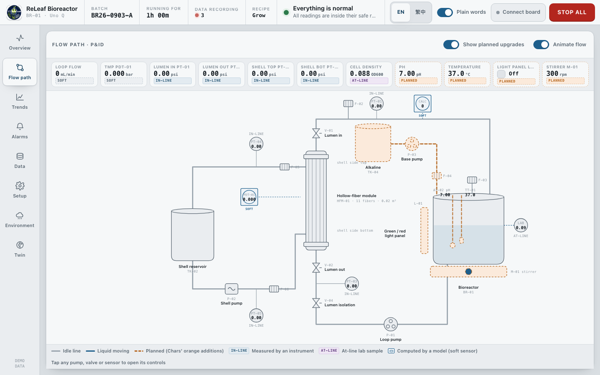
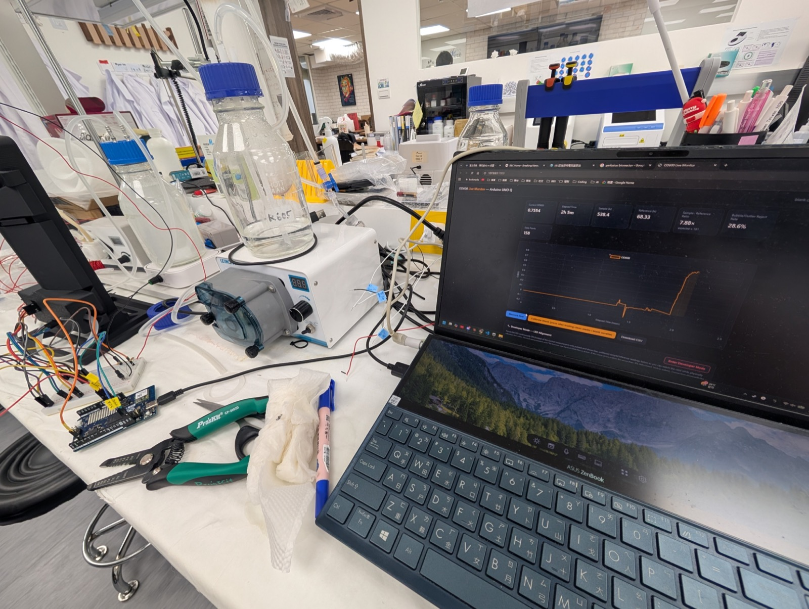
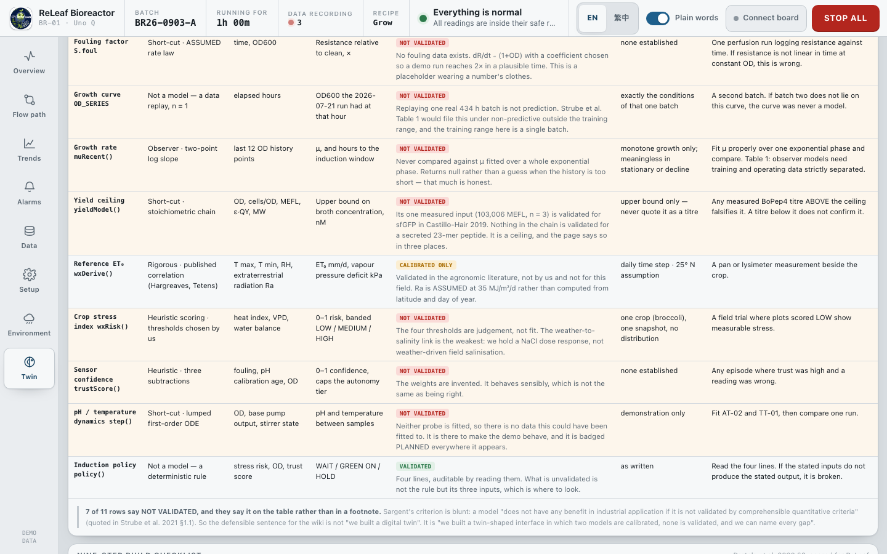
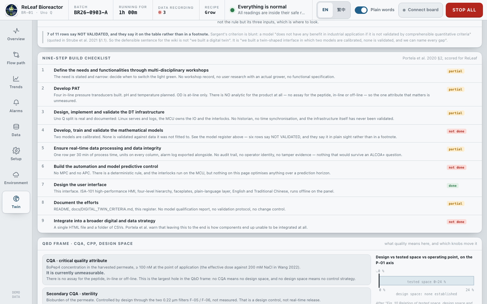
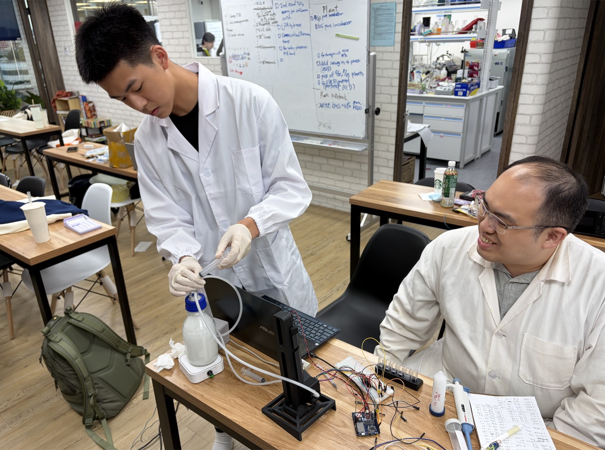
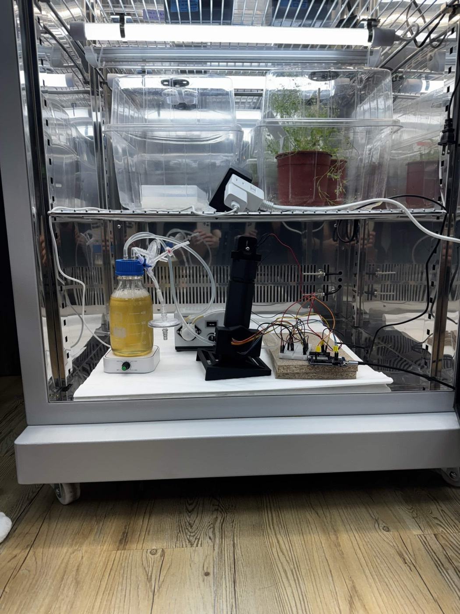
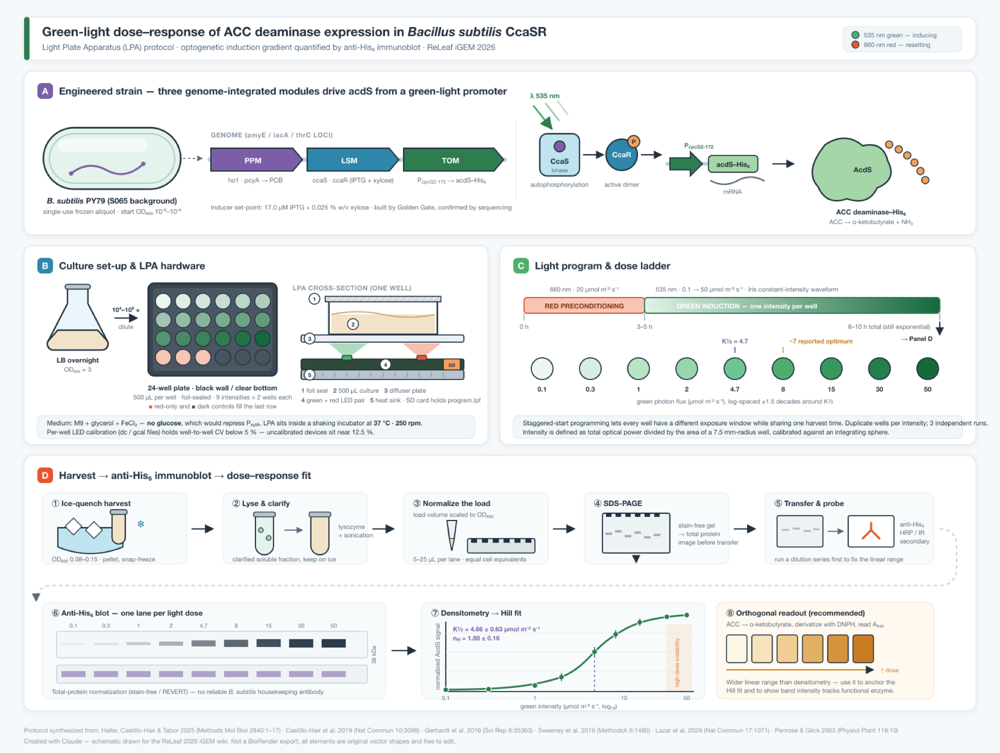
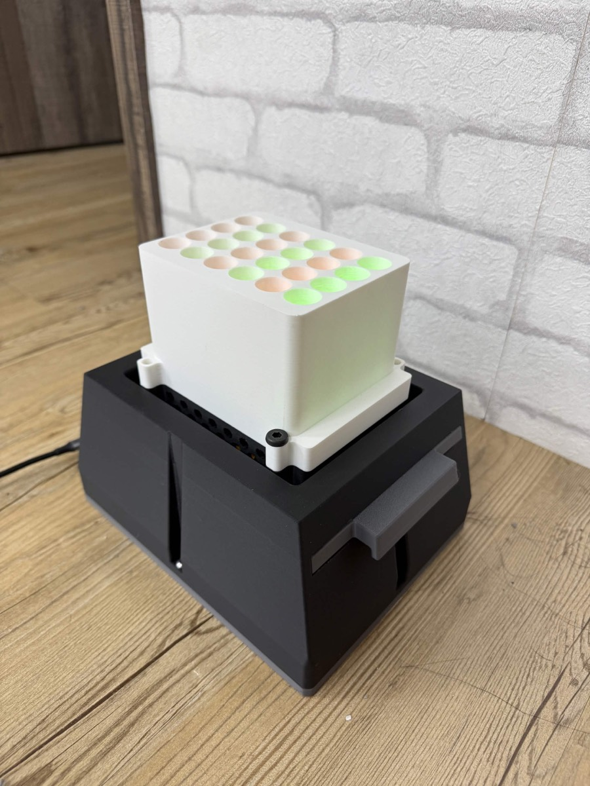

1 · What the software is這套軟體是什麼 The problem, the person holding the screen, and the one screen they see first.問題、拿著螢幕的人，以及他們最先看到的那一屏。
The problem問題
Biomanufacturing is gated. To obtain a useful protein you buy it from somebody who owns a fermenter, a cold chain and a registration dossier. ReLeaf's answer is a reactor a grower can own and run beside the crop. That answer creates a software problem immediately, and it is not the usual one. Commercial bioprocess control software assumes a trained operator, a validated facility and a technician on call. A reactor standing in a shed on a smallholding has none of those. The interface has to be the technician. 生物製造是被閘門擋住的。要拿到一個有用的蛋白質，你得向擁有發酵槽、冷鏈與登記文件的人購買。ReLeaf 的回答是一台農民可以自己擁有、放在作物旁邊運轉的反應器。這個回答馬上帶來一個軟體問題，而且不是常見的那一個。商用生物製程控制軟體預設有受訓過的操作員、通過驗證的廠房，以及隨叫隨到的技術人員。一台立在小農棚子裡的反應器一個都沒有。介面本身必須當那個技術人員。
The user使用者
Two people, and the interface is written for the harder one. A student operator can be told what a trans-membrane pressure is. A micro-farmer in a 產銷班 cannot be assumed to have been told anything, and will be looking at the screen because something is already wrong. So every reading on the interface carries three things at once: the number, its analog context (the normal band, both alarm limits, the setpoint) and a plain-language line underneath saying what the reading means and why it is there. The plain-language layer can be switched off for expert use. The whole interface exists in English and Traditional Chinese, and the Chinese is a real translation written for a Chinese-reading grower rather than a gloss of the English. 兩種人，而介面是為比較難的那一種寫的。學生操作員可以被教會什麼叫跨膜壓差。產銷班裡的小農不能假設他被教過任何東西，而且他會看螢幕，通常是因為已經出事了。所以介面上每一個讀值同時帶三樣東西：數字本身、它的類比脈絡（正常帶、兩個警報上下限、設定點），以及下面一行白話，說這個讀值是什麼意思、為什麼會在這裡。白話那一層可以關掉給熟手用。整個介面有英文與繁體中文兩版，中文是為讀中文的農民重寫的，不是把英文翻過去。
What it does它做什麼
- Shows the reactor. Eight views: Overview, Flow path (a real P&ID), Trends, Alarms, Data, Setup, Environment, Twin. Four display levels in the ISA-101 sense, from a single overview tile down to a per-device faceplate. The Twin view carries a connectivity ledger, a what-if runner, a model register, the nine-step checklist scored in section 5, a quality-by-design frame, the induction decision, the lead-time chain and the yield ceiling.顯示反應器。八個畫面：總覽、流程圖（真正的 P&ID）、趨勢、警報、資料、設定、環境、孿生。依 ISA-101 分成四個顯示層級，從一格總覽磚塊一路下到單一設備的面板。孿生畫面裡有連通性帳、假設情境模擬器、模型清冊、第 5 節評的九步清單、QbD 框架、誘導決策、前置時間鏈與產率上限。
- Runs a what-if before you commit to it. The Twin view can run the page's own model forward, faster than real time, from the current state under a changed pump setting, light state or rainfall. It uses the same engine as the live view, not a second one, so what the operator sees predicted is the model that would run the plant. It snapshots the state, runs on throwaway history and log containers, and restores every field afterwards. Recording is off during the run, no alarm fires, and no command goes out.在你決定之前先跑一次假設情境。孿生畫面可以把頁面自己的模型從當前狀態往前跑，比真實時間快，並套用改過的泵設定、燈光狀態或降雨量。它用的是與即時畫面同一套引擎，不是另寫一套，所以操作員看到的預測，就是那個會拿去跑設備的模型。它會先把狀態快照下來，在拋棄式的歷史與記錄容器上跑，跑完把每個欄位還原。執行期間不記錄、不觸發警報、不送出任何指令。
- Drives it. Pump outputs, stirrer speed, valve positions and the green/red light panel, sent to the board as one serial line per state change. Five one-touch recipes, Idle, Grow, Induce, Perfuse and Clean, each of which sets every actuator correctly in one press.驅動它。泵輸出、攪拌轉速、閥位與綠／紅光板，每次狀態改變送一行序列指令到控制板。五個一鍵模式：待機、生長、誘導、灌流、清洗，按一下就把每個致動器都設對。
- Records it. One row per 30 minutes of process time, exported as a three-sheet
.xlsx(Readings, Run info, Alarm log) or a UTF-8 CSV with a byte-order mark so Excel opens Chinese headers correctly. The workbook writer is a small ZIP and OOXML encoder inside the page, so there is no library to install and no upload.記錄它。每 30 分鐘製程時間寫一列，可輸出成三張表的.xlsx（讀值、批次資訊、警報記錄）或帶 BOM 的 UTF-8 CSV，讓 Excel 正確開啟中文欄位。試算表是頁面內一個小型 ZIP 加 OOXML 產生器寫出來的，不必安裝套件，也不會上傳。 - Says which numbers are measurements. Every process channel carries its provenance on its face, using the FDA's PAT classes plus one more for values with no instrument at all. Ten channels: four
IN-LINE(the four pressure transducers), oneAT-LINE(OD600, from a sample beside the rig), threeSOFT(loop flow, trans-membrane pressure and the fouling factor, which have no instrument anywhere on the skid), and twoPLANNED(pH and temperature, drawn dashed orange because the probes are not fitted). Four of ten numbers on the screen are measurements. The two soft sensors are now drawn on the P&ID itself as the ISA-5.1 symbol for a function performed in software, a circle inscribed in a square, because a different shape and not just a different colour is what stops an operator seeing instruments and inferring instruments.說出哪些數字是量測值。每一個製程通道都在畫面上標明來源，採用 FDA 的 PAT 分類，再加上一類給「完全沒有儀器」的值。十個通道：四個IN-LINE（四顆壓力感測器）、一個AT-LINE（OD600，取樣在設備旁邊量）、三個SOFT（迴路流量、跨膜壓差與結垢因子，整台設備上沒有對應儀器）、兩個PLANNED（pH 與溫度，因為探針還沒裝，畫成橘色虛線）。畫面上十個數字裡有四個是量測值。兩個軟感測現在直接畫在 P&ID 上，用 ISA-5.1 中「由軟體執行的功能」的符號，也就是方框內嵌圓形；用不同的形狀而不只是不同的顏色，才能避免操作員看到儀器就以為真的有儀器。

SOFT on loop flow and trans-membrane pressure, IN-LINE on the four pressures, AT-LINE on cell density, PLANNED on pH, temperature, the light panel and the stirrer. The legend at the foot of the diagram spells out all four. Dashed orange is equipment that is designed and not built.
這是一張真的 P&ID，不是裝飾用的示意圖。上方那條讀值列每個值都帶來源標記：迴路流量與跨膜壓差是 SOFT、四個壓力是 IN-LINE、菌體密度是 AT-LINE、pH、溫度、光板與攪拌器是 PLANNED。圖表下方的圖例把四種都寫清楚。橘色虛線是設計了但還沒做的設備。
What it does not show: a live rig. The label at the bottom left of the nav rail reads DEMO DATA, because no board is connected in this frame and every number on it is produced by the model inside the page.它沒有顯示的：一台在跑的設備。左側導覽列下方標著 DEMO DATA，因為這一張畫面沒有連控制板，上面每一個數字都是頁面內的模型算出來的。
Where this page sits in the judging.這一頁在評審裡的位置。 ReLeaf's three Special Award selections are Measurement, Hardware and Integrated Human Practices. Software is not one of them, and we are not claiming it as one. This page exists because the software carries a large part of the Measurement and Hardware cases, and because Project ballot question 4 asks how well engineering principles were used. It is written to the Best Software rubric anyway, because that rubric is the right checklist for judging whether a tool is documented, reusable and validated, whether or not the award is being contested. ReLeaf 選的三個特別獎是 Measurement、Hardware 與 Integrated Human Practices。Software 不在其中，我們也沒有宣稱它是。這一頁存在，是因為軟體撐起 Measurement 與 Hardware 論證的一大半，也因為 Project 評分表第 4 題問的是工程原則用得好不好。即使不角逐該獎，本頁仍照 Best Software 的評分面向來寫，因為那份清單本來就是判斷一個工具有沒有文件、能不能被重用、有沒有被驗證的正確清單。
2 · Architecture架構 Four layers, one hard split of responsibility, and one decision that will look wrong until you read why.四層、一條責任分界線，以及一個在你讀到理由之前會看起來很怪的決定。
firmware/releaf_br01.ino.
Arduino Uno Q 的 STM32U585 那一側。掌管泵、閥、1 Hz 感測掃描與全部三條連鎖保護。146 行 C，firmware/releaf_br01.ino。
Serial, 115200 baud, newline terminated. In: SET P01=12.0 P02=0.0 P03=0.0 STIR=300 LIGHT=GREEN V=111. Out: PV PH=7.02 T=37.0 PT1=2.69 PT3=1.31 PT4=0.42 PT5=0.93.序列埠，115200 baud，換行結尾。入：SET P01=12.0 …；出：PV PH=7.02 T=37.0 PT1=…。
python3 -m http.server 8080 is the whole server.
Arduino Uno Q 的 Dragonwing 那一側。用 HTTP 供應頁面、保存資料記錄、負責 Wi-Fi。整個伺服器就是 python3 -m http.server 8080。
Serving over HTTP rather than file:// is what enables Web Serial, so the Connect board button only works this way.用 HTTP 而不是 file:// 供應，是 Web Serial 能運作的前提，所以「連接控制板」按鈕只有這樣才會動。
python3 build_kiosk.py. Never edit the kiosk file by hand.由 python3 build_kiosk.py 產生。不要手動編輯 kiosk 檔。
Math Model/releaf-model/, that does the fitting, the identifiability analysis, the transport calculations and the anomaly detection, and emits tagged JSON. It runs on a laptop, not on the board. Everything it produces reaches the interface as a constant, not as a live call.
另一套獨立的 Python 程式 Math Model/releaf-model/，負責擬合、可辨識性分析、傳輸計算與異常偵測，輸出帶標籤的 JSON。它跑在筆電上，不在控制板上。它產生的所有東西都是以常數的形式進入介面，不是即時呼叫。
The split that matters真正重要的那條界線
The interlocks live on the MCU, not in the browser. There are three of them and they override the commanded value on every loop rather than advising it: the three lumen valves are in series so any one shut forces the loop pump to zero; a trans-membrane pressure above 0.50 bar forces it to zero; and no SET line for 5 seconds forces it to zero. A browser crash, a closed tab or a dropped Wi-Fi link therefore cannot move a pump or leave one running. The page always sends interlock-effective values, so a pump held off by an interlock is transmitted as 0.0 and never as its raw slider position. The page is a window onto the controller, not the controller.
連鎖保護寫在 MCU 上，不在瀏覽器裡。一共三條，而且每個迴圈都直接覆寫指令值，不是提醒：三顆管腔閥是串聯的，任何一顆關上就把迴路泵強制歸零；跨膜壓差超過 0.50 bar 強制歸零；連續 5 秒沒收到 SET 也強制歸零。所以瀏覽器當掉、分頁關掉、Wi-Fi 斷線，都不可能讓泵動起來或讓它繼續跑。頁面送出的一律是連鎖生效後的值，被連鎖擋下的泵送出去的是 0.0，不是滑桿上的原始值。頁面是看向控制器的一扇窗，它本身不是控制器。
One interlock was deliberately removed.有一條連鎖是被刻意拿掉的。 The dry-running interlock went when the tank level sensor LT-01 was removed from the design. A rule that cannot see its own input is worse than no rule, because people keep trusting it. That deletion is recorded in the equipment register rather than left silent. 液位感測器 LT-01 從設計裡拿掉時，防乾轉連鎖也一起拿掉了。一條看不到自己輸入的規則，比沒有規則更糟，因為人還是會繼續相信它。這個刪除記在設備清冊裡，沒有默默帶過。
Why one file, and why no build step為什麼是一個檔，為什麼沒有建置步驟
This looks like a shortcut and is not. Four constraints forced it, and all four come from where the thing has to run. 這看起來像偷懶，但不是。四個限制逼出這個決定，四個都來自它必須運轉的地方。
- The device may have no network. A reactor in a shed has an operator, a screen and a board. Anything fetched from a CDN is a failure mode with no recovery path in the field. There are zero external requests in the file: no font host, no chart library, no telemetry. The team logo is inlined as a base64 data URI.裝置可能沒有網路。棚子裡的反應器只有一個操作員、一個螢幕、一塊板子。任何從 CDN 抓的東西，在田間都是一個沒有復原路徑的故障模式。這個檔案裡對外請求是零：沒有字型主機、沒有圖表函式庫、沒有遙測。隊徽以 base64 data URI 內嵌。
- The person who has to fix it is a high-school student in two years' time. A build step is a second thing that can break, and it breaks silently and off-device. Opening one file in an editor and reloading the browser is a repair loop that survives the team that wrote it.兩年後要修它的人是一個高中生。建置步驟是第二個會壞掉的東西，而且它壞得很安靜、又壞在裝置之外。用編輯器開一個檔、重新整理瀏覽器，這個修復迴圈能活得比寫它的隊伍久。
- Reproducibility. The iGEM Software rubric asks for reproducible build and run instructions and pinned dependencies. A file with no dependencies is trivially reproducible: there is nothing to pin and nothing to resolve. This is the one place where the constraint and the rubric agree completely.可重現性。iGEM 軟體評分要求可重現的建置與執行說明，以及鎖定的相依版本。一個沒有相依套件的檔案是最容易重現的：沒有東西要鎖，也沒有東西要解析。這是限制與評分表完全一致的一點。
- The wiki freeze. iGEM wikis block external font and script hosts. Anything that needs a CDN would have to be rewritten before upload anyway.Wiki 凍結。iGEM wiki 會擋外部字型與腳本主機。任何需要 CDN 的東西，上傳前反正都得重寫。
The cost is real and should be said. 4,165 lines in one file is past the point where a newcomer can hold it in their head, there are no unit tests, and the numbered section banners inside the file are doing the job that a module boundary would do in a larger project. We took that trade because the failure modes it removes happen in a field and the failure modes it creates happen at a desk. 代價是真的，也應該講出來。一個檔 4,165 行，已經超過一個新來的人能整個裝進腦袋的程度；沒有單元測試；檔案裡那些編號的區段標題，在比較大的專案裡本來應該由模組邊界來做。我們接受這個取捨，是因為它消除的故障發生在田裡，而它造成的麻煩發生在書桌前。

3 · Inputs and outputs輸入與輸出規格 Every variable the software consumes or emits, with its unit, its range, where it comes from, and whether that source exists yet.軟體吃進去或吐出來的每一個變數，包含單位、範圍、來源，以及那個來源目前存不存在。
The light-induction half of this specification is anchored on Castillo-Hair et al. 2019, which characterised the CcaS/CcaR green-light system in Bacillus subtilis using the Light Plate Apparatus of Gerhardt et al. 2016. That paper is the reason the specification can be written at all: it gives a steady-state transfer function with fitted parameters and a kinetic model with measured time constants, so light intensity in and promoter output out is a defined mapping rather than a hand wave. It is also literature, not our data, and every row taken from it is marked lit. 本規格中「光誘導」那一半，錨定在 Castillo-Hair 等人 2019 年的論文上。該研究用 Gerhardt 等人 2016 年的 Light Plate Apparatus，把 CcaS/CcaR 綠光系統在枯草桿菌中特性化。這份規格能寫得出來就是因為它：它給了一個帶擬合參數的穩態轉移函數，以及一個帶實測時間常數的動力學模型，所以「光強度進、啟動子輸出出」是一個有定義的對應，不是空口說白話。但它是文獻，不是我們的數據，凡取自它的列都標成 lit。
The transfer function, verbatim.轉移函數原文。
Steady state is a Hill function, y = y₀ + Δy · xⁿ / (xⁿ + K½ⁿ), where y is sfGFP fluorescence in MEFL and x is light intensity in µmol·m⁻²·s⁻¹. The response to a step change in intensity is a third-order delayed differential system, production rate to immature reporter to mature reporter. Both are given in Castillo-Hair's own appendix, which is the copy held in this project at Opto_Math/2019_Castillo_Math.pdf.
穩態是一個 Hill 函數：y = y₀ + Δy · xⁿ / (xⁿ + K½ⁿ)，其中 y 是以 MEFL 表示的 sfGFP 螢光，x 是以 µmol·m⁻²·s⁻¹ 表示的光強度。對強度階躍變化的響應是一組三階延遲微分方程：生產速率、未成熟報導蛋白、成熟報導蛋白。兩者都寫在 Castillo-Hair 自己的附錄裡，本專案存有該份副本 Opto_Math/2019_Castillo_Math.pdf。
3.1 Light-induction inputs光誘導輸入
| Variable變數 | Symbol符號 | Unit單位 | Range範圍 | Source來源 | Status狀態 |
|---|---|---|---|---|---|
| Green photon flux at the culture培養液處的綠光光子通量 | I_G | µmol·m⁻²·s⁻¹ | 0.1 – 50 | Light panel L-01 duty cycle, or the LPA光板 L-01 的工作週期，或 LPA | not built L-01 does not exist. There is no calibrated flux anywhere in the project.L-01 還不存在。專案裡沒有任何一個經過校正的光通量值。 |
| Green wavelength綠光波長 | λ_G | nm | 520 | LED specificationLED 規格 | offset unreconciled Our LEDs are 520 nm. The CcaS absorption maximum is 535 nm and the source paper's K½ is quoted at 526 nm. The correction has not been made.我們的 LED 是 520 nm。CcaS 吸收峰在 535 nm，來源論文的 K½ 標在 526 nm。這個差異還沒有修正。 |
| Red photon flux (reset)紅光光子通量（關閉） | I_R | µmol·m⁻²·s⁻¹ | 20 | Light panel L-01光板 L-01 | not built |
| Red wavelength紅光波長 | λ_R | nm | 660 | LED specificationLED 規格 | offset unreconciled Source paper uses 672 nm.來源論文用的是 672 nm。 |
| Duty cycle of the light program光程式的工作週期 | D | % | 0 – 100 | Recipe or schedule chosen in the UI介面上選定的模式或排程 | uncharacterised Pulsatile versus static induction is known from the literature to change output. We have measured nothing.文獻已知脈衝式與恆定式誘導會影響輸出。我們什麼都還沒量。 |
| Induction onset誘導起始時間 | t_on | h of batch（批次時間） | — | Operator, recipe, or the Twin view's policy操作員、模式，或孿生畫面的策略 | policy exists, unvalidated |
| Hill coefficientHill 係數 | n | — | 1.88 ± 0.16 | Castillo-Hair 2019 | lit borrowed, not ours借來的，不是我們的 |
| Half-maximal intensity半數最大強度 | K½ | µmol·m⁻²·s⁻¹ | 4.66 ± 0.63 | Castillo-Hair 2019, at 526 nmCastillo-Hair 2019，526 nm | lit |
| Time to half-on半開時間 | t½_on | min | 105.1 ± 1.5 | Castillo-Hair 2019 | lit |
| Time to half-off半關時間 | t½_off | min | 74.97 ± 0.39 | Castillo-Hair 2019 | lit |
| Basal output基礎輸出 | y₀ | MEFL | 1997.6 | Castillo-Hair 2019 | lit |
| Output span輸出動態範圍 | Δy | MEFL | 106740.5 | Castillo-Hair 2019 | lit |
A discrepancy in our own records, unresolved.我們自己記錄裡的一個矛盾，尚未解決。
The team's 2026-07-04 spec freeze logs n = 1.88 ± 0.16 and K½ = 4.66 ± 0.63 as "Castillo-Hair 2019, E. coli, 526 nm", but the 2019 paper we cite is titled Optogenetic control of Bacillus subtilis gene expression. Either the host attribution in our notes is wrong or the parameters were taken from a different figure than we think. This must be checked against the paper before the wiki freeze. We have written it here rather than quietly picking whichever reading suits us.
團隊 2026-07-04 的規格凍結把 n = 1.88 ± 0.16 與 K½ = 4.66 ± 0.63 記成「Castillo-Hair 2019、大腸桿菌、526 nm」，但我們引用的 2019 年論文標題是《枯草桿菌基因表現的光遺傳學控制》。要不是我們筆記裡的宿主寫錯了，就是參數取自跟我們以為的不同的圖。wiki 凍結前必須對照論文確認。我們把它寫在這裡，而不是安靜地挑一個對自己有利的說法。
3.2 Reactor sensor inputs反應器感測輸入
| Tag | Variable變數 | Unit單位 | Path into the software進入軟體的路徑 | Status狀態 |
|---|---|---|---|---|
| PT-01 | Lumen inlet pressure管腔入口壓力 | psi (0–30) | MCU A1 → PV line, 1 Hz | built |
| PT-03 | Lumen outlet pressure, under the module模組下方的管腔出口壓力 | psi (0–30) | MCU A2 → PV | built |
| PT-04 | Shell top pressure殼側頂部壓力 | psi (0–30) | MCU A3 → PV | built, uncharacterised Currently derived from the lumen pump curve. The shell side has never been characterised on the rig.目前是從管腔側的泵曲線推出來的。殼側從來沒有在這台設備上做過特性化。 |
| PT-05 | Shell bottom pressure殼側底部壓力 | psi (0–30) | MCU A4 → PV | built, uncharacterised |
| AT-02 | pH | pH | I²C front end → PV PH= | planned The firmware currently declares float ph = 7 as a constant. It is not a measurement and the interface labels it Planned.韌體現在寫死 float ph = 7。那不是量測值，介面上標示為「規劃中」。 |
| TT-01 | Temperature溫度 | °C | DS18B20 1-Wire, pin 2 | planned Firmware constant float tempC = 25.韌體常數 float tempC = 25。 |
| — | Optical density at 600 nm600 nm 光密度 | AU | Sample taken off the rig, typed in. Tagged LAB on every screen it appears on.從設備上取樣、人工輸入。凡出現的畫面都標 LAB。 | manual The team's own in-line photometer exists and produced the 434-hour run, but it is a separate instrument and is not wired into this interface.團隊自製的管線內光度計是存在的，也產出了 434 小時的長跑，但它是獨立儀器，沒有接進這個介面。 |
| — | Photometer reference channel光度計參考通道 | lux | Photometer log, offline光度計記錄，離線 | offline This is the channel that caught the instrument degrading. See section 6.就是這個通道抓到儀器在劣化。見第 6 節。 |
| — | Field weather田間氣象 | various多項 | A manual snapshot pasted into the source, flagged live: false in the code.貼在原始碼裡的人工快照，程式中標記 live: false。 | not live There is no weather API call. The Environment view is honest about this on its face.沒有任何氣象 API 呼叫。環境畫面上直接寫明這件事。 |
| — | Operator commands操作員指令 | %, rpm, open/shut開／關 | Sliders, valve toggles, recipe buttons, light state, plain-words toggle, language滑桿、閥開關、模式按鈕、燈光狀態、白話開關、語言 | built |
3.3 Outputs輸出
| Output輸出 | Unit單位 | Produced by產生方式 | Consumer使用者 |
|---|---|---|---|
| Actuator command line致動器指令行 | — | One SET line per state change, interlock-effective values only每次狀態改變送一行 SET，且一律是連鎖生效後的值 | MCU |
| Pump outputs P-01, P-02, P-03泵輸出 P-01、P-02、P-03 | % of full scale滿刻度百分比 | PWM, clamped to the 24 % top of the measured calibration rangePWM，上限箝制在實測校正範圍的頂點 24 % | Pumps泵 |
| Light state燈光狀態 | OFF | GREEN | RED | Two digital pins. Green switches the CcaS/CcaR system on in B. subtilis; red switches it off.兩支數位腳位。綠光把枯草桿菌的 CcaS/CcaR 系統打開，紅光關掉它。 | L-01 (planned)L-01（規劃中） |
| Loop flow迴路流量 | mL/min | Read off the measured pump curve. Tagged CALC, never FT-01, because there is no flow meter.從實測泵曲線讀出。標 CALC，絕不標 FT-01，因為沒有流量計。 | Display, fouling model顯示、結垢模型 |
| Trans-membrane pressure跨膜壓差 | bar | Mean lumen pressure minus mean shell pressure, computed on the MCU管腔平均壓減殼側平均壓，在 MCU 上計算 | Display, interlock at 0.50 bar顯示、0.50 bar 連鎖 |
| Fouling resistance ratio結垢阻力比 | × baseline基準倍數 | ΔP_net divided by flow, relative to the clean baseline at 263 mL/min. Clean the module before 2.00×.淨壓差除以流量，對照 263 mL/min 的乾淨基準。到 2.00 倍之前要清洗模組。 | Display, maintenance decision顯示、維護判斷 |
| Estimated peptide concentration推估胜肽濃度 | nM | The yield chain in section 4, model M8. Displayed with the words "a ceiling estimate, not a measured titre" beside it.第 4 節模型 M8 的產率推算鏈。旁邊直接寫著「這是上限估計，不是實測效價」。 | Twin view孿生畫面 |
| Crop stress risk band作物逆境風險等級 | low | med | high | Maximum of four indices derived from the weather snapshot由氣象快照導出的四項指標取最大值 | Overview, Environment總覽、環境 |
| Induction decision and autonomy tier誘導決策與自主等級 | HOLD | WAIT | GREEN ON | Demand signal, culture state and a trust score, combined by an explicit rule set需求訊號、菌況與信任分數，由明確的規則組合 | Twin view. It advises. It never actuates.孿生畫面。它只建議，從不致動。 |
| Alarm list警報清單 | P1 | P2 | Band and interlock evaluation. A reading is only wrong if the equipment behind it is supposed to be running.依帶區與連鎖判定。只有當該讀值背後的設備本來就該在運轉時，讀值才算「不對」。 | Alarms view, banner警報畫面、頂部橫幅 |
| Batch record批次記錄 | .xlsx / .csv | One row per 30 min of process time. Three sheets: Readings with a unit on every column and numbers stored as numbers, Run info with the rig constants and the pump curve, and the Alarm log. CSV carries a UTF-8 byte-order mark.每 30 分鐘製程時間一列。三張表：讀值（每欄都有單位，數字以數值型態儲存）、批次資訊（含設備常數與泵曲線）、警報記錄。CSV 帶 UTF-8 BOM。 | Excel, the model stack, the notebookExcel、模型程式、實驗記錄 |
4 · The models模型清單 Eleven models, each classified against the taxonomy in Zobel-Roos et al., with what it predicts, whether it is validated, the range it is valid over, and what would falsify it.十一個模型，依 Zobel-Roos 等人的分類法歸類，並列出它預測什麼、驗證了沒有、有效範圍，以及什麼會推翻它。
Zobel-Roos et al. sort process models by whether they extrapolate. Rigorous physico-chemical models, which separate fluid dynamics, phase equilibrium and mass transfer and parameterise each independently, are the only class they call predictive in scale, and only once validated. Short-cut models are "non-predictive in scale and dimensions". Statistical models and neural networks are "non-predictive outside trainings range". Hybrid models are demoted to "non-predictive due to the statistical part", on the argument that combining a mechanistic model with a fitted one reduces the predictability to the weakest part. That last position is contested, and Portela et al. in the same volume treat hybrid modelling more favourably, so it is presented here as one group's falsification-based ranking rather than a settled consensus. Zobel-Roos 等人依「會不會外推」把製程模型分類。嚴謹的物理化學模型把流體力學、相平衡與質傳分開、各自獨立參數化，是他們唯一稱為「在尺度上具預測性」的一類，而且必須先經過驗證。捷徑模型是「在尺度與尺寸上不具預測性」。統計模型與類神經網路是「在訓練範圍外不具預測性」。混合模型被降級為「因統計部分而不具預測性」，理由是把機制模型和擬合模型合起來，預測力會被最弱的那一半決定。最後這個立場是有爭議的，同一本書裡 Portela 等人對混合建模的態度友善得多，所以這裡把它當成某一研究群基於可否證性的排序，而不是已有共識的定論。
Applying that ruler to ReLeaf honestly: most of what the software computes is short-cut or statistical, and therefore does not extrapolate. The one genuinely mechanistic layer, the light-to-promoter transfer function, has not been fitted in our hands at all. 誠實地把這把尺放到 ReLeaf 上：軟體算的東西大部分是捷徑型或統計型，因此不會外推。唯一真正屬於機制型的那一層——光到啟動子的轉移函數——我們自己根本還沒擬合過。
Calibrated is not validated, and the difference is the whole section.「校正過」不等於「驗證過」，而這個差別就是整節的重點。 Sargent's criterion, quoted by Zobel-Roos et al., is blunt: a model has no benefit in industrial application if it is not validated by comprehensible quantitative criteria. Validation means scoring against data the model was not fitted to. Two of our eleven models are calibrated. None is validated. The pump curve is fitted on the same nine points it interpolates. The membrane pressure drop is fitted on one clean module at one temperature with water. Neither has a held-out set. Seven of the eleven rows in the interface's own model register say NOT VALIDATED, and they say it on the table rather than in a footnote. Zobel-Roos 等人引用的 Sargent 準則講得很直白：模型若沒有以可理解的量化標準驗證過，在工業應用上沒有任何好處。驗證的意思是，拿模型沒有用來擬合的資料去評分。我們十一個模型裡，兩個有校正，沒有一個有驗證。泵曲線是用它自己要內插的那九個點擬合的。膜壓降是在一支乾淨模組、單一溫度、純水下擬合的。兩者都沒有保留測試集。介面自己的模型清冊裡，十一列有七列寫著「未驗證」，而且是寫在表格上，不是藏在註腳裡。
Two things a judge will notice faster than we would like.兩件評審會比我們希望的更快發現的事。
1. The growth curve is the weakest link and it looks like the strongest. A real 434-hour run is genuinely good data. Replaying it is not a model. Everything downstream of the OD channel, including readiness, time to ready, the yield estimate and the induction decision, inherits n = 1. 1. 生長曲線是最弱的一環，但它看起來最強。一次真實的 434 小時長跑確實是好資料。但把它重播一次不是模型。OD 通道下游的一切——是否可誘導、還要多久、產率估計、誘導決策——都繼承了 n = 1。
2. The fouling rate is invented, and it drives the only maintenance decision in the product. The rate law is assumed with a coefficient chosen so that a demonstration reaches the 2× cleaning threshold at a plausible time. One perfusion run logging membrane resistance against time fixes it, and it is the cheapest high-value experiment on the whole list. 2. 結垢速率是編出來的，而它決定了這個產品裡唯一一個維護決策。速率式是假設的，係數挑成讓展示在一個合理的時間點碰到 2 倍清洗門檻。只要跑一次灌流、把膜阻力對時間記錄下來就能修好，而且那是整份清單上最便宜的高價值實驗。
| # | Model模型 | Type類型 | In → predicts輸入 → 預測 | Validation驗證 | Valid range有效範圍 | Falsified by如何被推翻 |
|---|---|---|---|---|---|---|
| M1 | Pump curve泵曲線 | Short-cut, measured lookup with interpolation捷徑型，實測查表加內插 | P-01 % → mL/min | calibrated only 9 points, n = 1 each, 22 °C, water. Fitted on the same nine points it interpolates, with no held-out set.9 個點，每點 n = 1，22 °C，純水。就是用它自己要內插的那九個點擬合的，沒有保留測試集。 | 0 – 24 % 0 – 450 mL/min |
Fit a flow meter and compare. Running medium instead of water at a different viscosity.裝流量計來比對。或改用黏度不同的培養基而非純水。 |
| M2 | Membrane pressure drop膜壓降 | Short-cut with a mechanistic form, ΔP = aQ + bQ²帶機制形式的捷徑型，ΔP = aQ + bQ² | Q → ΔP_net (bar) | calibrated only R² 0.9954, residual SD 0.0101 bar, background subtracted using a jumper configuration. Clean module, 22 °C, one module, no held-out set.R² 0.9954，殘差 SD 0.0101 bar，並用跳接管組態扣掉背景。乾淨模組、22 °C、只有一支模組，沒有保留測試集。 | 113 – 263 mL/min 22 °C, water, clean module純水、乾淨模組 |
Repeat with a fouled module, or with medium. Net ΔP is 0.90 to 0.96× Hagen-Poiseuille, so a large deviation would say a fibre is blocked.用結垢的模組或培養基重做。淨壓差是 Hagen-Poiseuille 的 0.90 到 0.96 倍，偏離太多就代表有纖維堵住。 |
| M3 | Trans-membrane pressure跨膜壓差 | Direct balance arithmetic直接的平衡式算術 | PT-01,03,04,05 → TMP | arithmetic only An audit of the live dashboard on 2026-09-02 found the displayed TMP not distinguishable from zero under either error model.2026-09-02 對即時儀表板的稽核發現，在兩種誤差模型下，顯示的 TMP 都與零無法區分。 | needs zeroed sensors感測器須先歸零 | Zero all four transducers against atmosphere and repeat. A ±0.055 bar interval on a 0.30 bar design point is not good enough to control on.四顆感測器對大氣歸零後重做。在 0.30 bar 的設計點上帶 ±0.055 bar 的區間，還不足以拿來控制。 |
| M4 | Fouling resistance結垢阻力 | Short-cut, ratio to a clean baseline捷徑型，對乾淨基準取比值 | ΔP_net / Q → × baseline | not validated The module has never been run to fouling. The 2.00× cleaning threshold is a design rule, not an observation.模組從來沒有跑到結垢過。2.00 倍的清洗門檻是設計規則，不是觀察結果。 | normalise to 25 °C須正規化到 25 °C | Run a culture to fouling and record the trajectory. If resistance jumps rather than creeping, a ratio threshold is the wrong instrument.把培養跑到結垢並記錄軌跡。若阻力是跳升而不是緩升，用比值門檻就是錯的工具。 |
| M5 | Growth kinetics生長動力學 | Unstructured kinetic, mechanistic form, fitted parameters非結構動力學，機制形式，參數擬合 | t → OD600 | not validated 37 °C: µ 0.92 h⁻¹ log-linear over 0 to 3 h, 1.31 h⁻¹ logistic, X_max 1.54 OD. 22 °C: µ 0.0329 h⁻¹ over 7 to 40 h. In the interface the OD trace is a replay of the 434-hour run, not a forward prediction. n = 1.37 °C：0 到 3 h 對數線性 µ 0.92 h⁻¹，logistic 1.31 h⁻¹，X_max 1.54 OD。22 °C：7 到 40 h µ 0.0329 h⁻¹。介面裡的 OD 曲線是把 434 小時長跑重播一次，不是往前預測。n = 1。 | the exact condition fitted僅限所擬合的條件 | Whether 37 °C parameters transfer to 22 °C ambient operation is an open biological question, not an engineering one. A 22 °C batch run alongside a 37 °C one settles it.37 °C 的參數能不能轉用到 22 °C 常溫運轉，是生物問題不是工程問題。跑一個 22 °C 與 37 °C 的平行批次就能解決。 |
| M6 | CcaSR steady-state transfer functionCcaSR 穩態轉移函數 | Rigorous form, literature parameters機制形式，文獻參數 | I_G → MEFL | literature only Not fitted in our hands. No induction curve exists in this project.我們自己沒有擬合過。本專案不存在任何誘導曲線。 | 0.1 – 50 µmol·m⁻²·s⁻¹ 526 nm |
The LPA dose-response in section 6. If our n and K½ come back different, every downstream number moves with them.第 6 節的 LPA 劑量反應實驗。若我們量到的 n 與 K½ 不同，下游每一個數字都會跟著動。 |
| M7 | CcaSR dynamicsCcaSR 動力學 | Rigorous, third-order delayed ODE system機制型，三階延遲常微分方程組 | light step → output over time光階躍 → 輸出隨時間 | literature only | t½_on 105.1 min t½_off 74.97 min |
A step change from red to green, sampled every 15 min for 6 h, in our strain and vessel.在我們的菌株與容器裡做紅轉綠的階躍，每 15 分鐘取樣一次，做 6 小時。 |
| M8 | Yield ceiling chain產率上限推算鏈 | Short-cut stoichiometric bound捷徑型的化學計量上限 | MEFL → molecules/cell → nM | a bound, not a prediction Four of the five chain steps are tagged verify.五個步驟中有四個標為待驗證。 | upper bound only僅為上限 | Any measured titre at all. See the box below.任何一個實測效價都可以。見下方說明框。 |
| M9 | Weather-derived stress indices氣象導出的逆境指標 | Short-cut empirical correlations, Tetens for saturation vapour pressure and Hargreaves for reference ET捷徑型經驗關聯式，飽和水氣壓用 Tetens，參考蒸發散用 Hargreaves | weather → heat, VPD, dryness, salinity risk氣象 → 熱、VPD、乾旱、鹽害風險 | not validated Extra-terrestrial radiation is assumed at 35 MJ for 25° N and tagged as an assumption in the code. Never checked against a field season.地外輻射假設為 25°N 的 35 MJ，程式中標示為假設。從未對照過一整個作季驗證。 | Taipei, broccoli thresholds台北、青花菜門檻 | A season of soil sensor data against the index. Crop thresholds are cool-season-crop values, so a different crop invalidates them directly.用一整季的土壤感測資料對照指標。作物門檻取的是冷季作物值，換作物就直接失效。 |
| M10 | Measurement trust layer量測信任層 | Artificial intelligence and statistical, PCA-MSPC plus an autoencoder人工智慧與統計型，PCA-MSPC 加自編碼器 | OD and reference channel → sensor fault vs process eventOD 與參考通道 → 感測器故障或製程事件 | n = 2 events, one run 26.7 h of lead time on a real instrument failure. No error rate is reportable from two events.在一次真實的儀器失效上取得 26.7 小時的提前量。兩個事件算不出錯誤率。 | non-predictive outside training range訓練範圍外不具預測性 | Manufacture faults deliberately, three of each kind. See section 6.刻意製造故障，每種三次。見第 6 節。 |
| M11 | Photometer calibration光度計校正 | Statistical. A linear fit in use, a Gaussian process with input-dependent noise as the audit.統計型。實際使用的是線性擬合，稽核用的是帶輸入相依雜訊的高斯過程。 | raw signal → OD600原始訊號 → OD600 | 45 paired points, no replicates The linear fit wins inside its own range, RMSE 0.0235 against the GP's 0.0254.在自己的範圍內線性擬合勝出，RMSE 0.0235 對高斯過程的 0.0254。 | OD < 1.2 by hand人工設定 OD < 1.55 learned模型自己學到 |
Extrapolate it. Past OD 1.2 the same linear fit goes from RMSE 0.0235 to 0.1715, which is exactly what happens in a run nobody is watching.讓它外推就知道了。超過 OD 1.2，同一條線性擬合的 RMSE 從 0.0235 變成 0.1715，而那正是沒人盯著的長跑裡會發生的事。 |

M8 is a ceiling and must never be quoted as a prediction.M8 是上限，絕不可以被當成預測引用。 The chain runs: 103,006 MEFL under saturating green from Castillo-Hair 2019 figure 5, n = 3, spread 89,769 to 127,842; converted to molecules by the sfGFP-to-fluorescein brightness ratio 0.761, giving 135,323 molecules per cell; multiplied by a cells-per-OD figure of 3.5 × 10⁸ that is literature, not measured by us; at OD 1.4 that lands at 110 nM, with the literature spread on cells per OD alone giving 63 to 157 nM. The published effective dose of BoPep4 is 100 nM. So the ceiling sits at roughly 0.6 to 1.6 times the dose. But sfGFP is intracellular, stable and never secreted, while BoPep4 is a 23-residue peptide that has to cross the Sec pathway into a broth containing at least eight extracellular proteases. A real yield one to two orders of magnitude below this is entirely reasonable. The value of the number is that it bounds the gap to under two logs rather than five. 這條鏈是：Castillo-Hair 2019 圖 5，飽和綠光下 103,006 MEFL，n = 3，範圍 89,769 到 127,842；用 sfGFP 對螢光素的亮度比 0.761 換算成分子數，得每細胞 135,323 個分子；再乘上每 OD 的細胞數 3.5 × 10⁸，而這個數字是文獻值，不是我們量的；在 OD 1.4 時落在 110 nM，光是文獻上每 OD 細胞數的分散度就給出 63 到 157 nM。BoPep4 已發表的有效劑量是 100 nM。所以上限大約是有效劑量的 0.6 到 1.6 倍。但 sfGFP 是胞內的、穩定的、從不分泌；BoPep4 是一段 23 個胺基酸的胜肽，必須經 Sec 路徑分泌到一個至少含八種胞外蛋白酶的培養液裡。真實產量比這個低一到兩個數量級是完全合理的。這個數字的價值在於把落差框在兩個數量級以內，而不是五個。
Bioreactor_UI/data/od600_growth_run_20260721.csv, 221 points binned to roughly two-hour means from 2,671 valid rows of a 10-minute log, 2026-07-21 03:46 UTC to 2026-08-08 05:58 UTC, at 22 °C. Two features are marked because the software argument rests on them. The dip between 120 and 160 h is a process event: the reference channel was healthy at 26.69 lux and the scatter was normal, yet OD fell through what should have been growth. It is still unattributed. The scatter blow-up after 240 h is an instrument event: the reference channel had already stepped from 26.67 to 25.83 lux and then collapsed, and it never recovered, sitting at 21.5 lux after 300 h.
來源 Bioreactor_UI/data/od600_growth_run_20260721.csv，由 10 分鐘記錄的 2,671 筆有效資料歸併成約兩小時平均的 221 點，2026-07-21 03:46 UTC 到 2026-08-08 05:58 UTC，22 °C。圖上標了兩個特徵，因為整個軟體論證就靠它們。120 到 160 h 的下凹是製程事件：參考通道健康（26.69 lux）、散布正常，OD 卻在本該生長的區間下降。至今未歸因。240 h 之後散布放大是儀器事件：參考通道先從 26.67 階降到 25.83 lux，接著崩掉，而且再也沒有回復，300 h 之後停在 21.5 lux。
What it does not show: a culture that survived 434 hours. Unbroken describes the log, not the culture. The method behind the run, the medium, the inoculum and which compartment the culture sat in, is not written down anywhere in the project.它沒有顯示的：一個活了 434 小時的培養。「不中斷」形容的是記錄，不是培養。這次長跑的方法——培養基、接種量、培養液待在哪一個腔室——專案裡任何地方都沒有寫下來。

5 · The digital twin claim數位孿生的主張 Scored against the connectivity triad and the nine-step build list in Portela et al., because an overclaimed twin is the fastest way to lose a judge.用 Portela 等人的連通性三元組與九步建置清單來打分，因為誇大的孿生是最快失去評審信任的方法。
Portela et al. define a digital twin as three things together: the physical asset, the virtual asset, and the bidirectional connectivity between them that enables continuous communication, data and information exchange, and implementation of the twin-induced actions. Gargalo et al., in the same volume, draw the boundary that separates a twin from a shadow, and it is about direction of dataflow: in a shadow the flow from physical to digital is automated and the flow from digital to physical is not; in a twin both are. Collapsed into five yes-or-no tests, four of them are about plumbing and can be answered with a cable. The fifth is about experiments and cannot be shortcut. Portela 等人把數位孿生定義成三樣東西的總和：實體資產、虛擬資產，以及兩者之間的雙向連通性，使其能持續通訊、交換資料與資訊，並執行由孿生體引發的動作。同一本書裡的 Gargalo 等人畫出孿生與影子的分界，關鍵在資料流的方向：影子是實體到數位自動、數位到實體不自動；孿生是兩個方向都自動。把這些收斂成五個是非題，其中四題是接線問題，插一條線就能回答。第五題是實驗問題，沒有捷徑。
| # | Test測試 | ReLeaf | Evidence證據 |
|---|---|---|---|
| T1 | A physical asset exists實體資產存在 | pass | BR-01: the hollow-fibre module, the loop and shell pumps, three valves, four pressure transducers, four sterile filters. Listed with build status in the interface's equipment register.BR-01：中空纖維模組、迴路泵與殼側泵、三顆閥、四顆壓力感測器、四個除菌過濾器。介面的設備清冊裡有清單與製作狀態。 |
| T2 | A virtual asset exists carrying a process model, not just a screen虛擬資產存在，而且帶著製程模型，不只是一個畫面 | pass | Eleven models, listed in section 4 and in the interface's own model register, plus a step loop that can be run forward faster than real time.十一個模型，列在第 4 節與介面自己的模型清冊裡，外加一個可以比真實時間更快往前跑的步進迴圈。 |
| T3 | Data flows automatically from the asset into the model資料自動從資產流進模型 | pass, conditionally | The firmware has emitted PV lines at 1 Hz since day one. The page never read them until 6 September 2026. It now parses that stream, and measured pH, temperature and the four pressures overwrite the model. True only while a board is plugged in, and the Twin view reports which.韌體從第一天起就每秒送出 PV 行。但頁面在 2026 年 9 月 6 日之前從來沒有讀過它們。現在頁面會解析那條串流，量到的 pH、溫度與四個壓力會覆蓋模型值。只有在控制板插著的時候才成立，而孿生畫面會顯示現在是哪一種。 |
| T4 | Actions flow automatically from the model back to the asset動作自動從模型流回資產 | pass, conditionally | SET frames are written on every state change. Same condition: only while a board is plugged in.每次狀態改變都寫出 SET 訊框。條件相同：只有在控制板插著的時候。 |
| T5 | The models are validated against data they were not fitted to模型以「不是拿來擬合的資料」驗證過 | fail | Two models are calibrated, the pump curve and the membrane pressure drop. None is validated. Seven of eleven rows in the model register say so on their face.兩個模型有校正：泵曲線與膜壓降。沒有一個經過驗證。模型清冊十一列中有七列直接標明這件事。 |
The wording we will defend我們願意為之辯護的說法
We are not going to write "we built a digital twin". It is not false any more, but it is unqualified, and unqualified is what gets taken apart. What we will say instead: 我們不會寫「我們做了一個數位孿生」。這句話現在不算假，但它沒有加限定，而沒有加限定的說法就是會被拆掉的說法。我們會這樣說：
ReLeaf BR-01 runs a digital twin at the soft-sensing and virtual-experiment level, with bidirectional connectivity to the physical skid implemented and demonstrable: sensor telemetry in at 1 Hz, command frames out. Of its eleven models, two are calibrated against measured rig data and none is yet validated against held-out data. The interface marks every unvalidated model as unvalidated on its own face, together with the experiment that would falsify it. ReLeaf BR-01 在軟感測與虛擬實驗的層級上跑一個數位孿生，與實體設備之間的雙向連通性已經實作、也可以現場示範：感測遙測每秒進來一次，指令訊框送出去。十一個模型中有兩個以實測設備資料校正過，沒有一個以保留資料驗證過。介面把每一個未驗證的模型都標成未驗證，並附上什麼實驗會推翻它。
Two things follow from that and both matter. First, with no board connected this is not a digital twin, and the interface says so in a yellow banner on the Twin view rather than leaving the visitor to guess: every process value on screen is then demo data produced by the model in the page, and the honest description is an operator interface with a simulator behind it, which is a respectable thing to be. Second, a project that passes the four plumbing tests and fails the validation test has built a twin-shaped object whose predictions nobody should act on. That is the situation we are in, and it is why nothing on this system closes a loop. 由此得出兩件事，兩件都重要。第一，沒有接控制板的時候，這不是數位孿生，而介面在孿生畫面上用黃色橫幅直接寫出來，不讓訪客自己猜：那時候畫面上每一個製程值都是頁面內模型算出來的示範資料，誠實的描述是「一個後面接著模擬器的操作介面」，而那本身是一件體面的事。第二，通過四項接線測試卻沒通過驗證測試的專案，做出來的是一個孿生形狀的物件，它的預測沒有人應該拿來行動。我們就處在這個狀態，這也是為什麼這套系統上沒有任何東西閉迴路。
What would let us drop the qualifiers: validate two models against data they were not fitted to, the fouling law and the growth model being the two that matter; obtain any assay at all for the critical quality attribute; and measure the lead time. Nothing else on the list is close in value. 什麼情況下我們可以拿掉這些限定詞：用非擬合資料驗證兩個模型（重要的是結垢律與生長模型）；取得任何一個能量到關鍵品質屬性的分析方法；量出前置時間。清單上其他項目的價值都差得很遠。

Capability ladder能力階梯
What the system can do at all, which is a different question from what it is allowed to move. Note for honesty: none of the source chapters supplies a numbered autonomy ladder. The rungs below are assembled from the volume's own vocabulary, not quoted from a table. 系統「做得到什麼」，這跟「被允許動什麼」是兩個問題。為誠實起見要說明：來源文獻裡沒有任何一章提供編號的自主等級表。以下的階梯是用該書自己的詞彙組起來的，不是從某張表引用來的。
| Rung階 | ReLeaf |
|---|---|
| Monitoring監看 | have |
| Soft sensing軟感測 | have |
| What-if, virtual experiment假設情境、虛擬實驗 | have added 2026-09-062026-09-06 加入 |
| Bidirectional connectivity雙向連通性 | have, only while a board is plugged in |
| Advanced or model predictive control先進或模型預測控制 | not built blocked on the fouling model and on the lead time卡在結垢模型與前置時間上 |
| Autonomous自主 | not built, deliberately the critical quality attribute is unmeasurable, so there is nothing to close a loop on關鍵品質屬性量不到，所以沒有東西可以閉迴路 |
ReLeaf sits on rung three, and on rung four only while the cable is in. What the machine is allowed to move is a separate table in the interface, gated by a sensor-confidence score, and it is currently pinned at tier 0 or 1 by design. ReLeaf 站在第三階，只有在線插著的時候站上第四階。機器被允許動什麼是介面裡另一張表，由感測器信心分數把關，目前依設計鎖在 0 或 1 級。
The nine-step build list, scored九步建置清單的評分
| Step (Portela et al., section 2)步驟（Portela 等人，第 2 節） | ReLeaf | One line of evidence一句話的證據 |
|---|---|---|
| 1. Define the needs and functionalities through multi-disciplinary workshops | partial | The need is stated and narrow: decide when to switch the light green. No workshop record, no user research with an actual grower, no functional specification.需求寫下來了，而且很窄：決定什麼時候把燈切成綠色。沒有工作坊紀錄、沒有對真正農民做過使用者研究、沒有功能規格書。 |
| 2. Develop PAT | partial | Four in-line pressure transducers built, pH and temperature planned, OD at-line only. There is no analytic for the product at all, in-line or off-line, so the one attribute that matters is unmeasured.四顆管線內壓力感測器做好了，pH 與溫度規劃中，OD 只有旁線。產物完全沒有任何分析方法，管線內或離線都沒有，所以唯一真正重要的屬性沒有被量到。 |
| 3. Design, implement and validate the DT infrastructure | partial | The Uno Q split is real and documented: Linux serves and logs, the MCU owns the IO and the interlocks. No historian, no time synchronisation, and the infrastructure itself has never been validated.Uno Q 的分工是真的，也有文件：Linux 供應頁面與記錄，MCU 掌管 IO 與連鎖。沒有歷史資料庫、沒有時間同步，而且基礎架構本身從來沒有被驗證過。 |
| 4. Develop, train and validate the mathematical models | not done | Two models are calibrated. None is validated against data it was not fitted to. This is the step Portela calls the heart of the twin, because the twin's operational capacity is a strong function of the predictive capability of its models.兩個模型有校正。沒有一個以非擬合資料驗證過。這正是 Portela 稱為「孿生的心臟」的那一步，因為孿生的運作能力強烈取決於模型的預測能力。 |
| 5. Ensure real-time data processing and data integrity | partial | One row per 30 min of process time, units on every column, alarm log exported alongside. No audit trail, no operator identity, no tamper evidence. Nothing here would survive an ALCOA+ question.每 30 分鐘製程時間一列、每欄都有單位、警報記錄一併匯出。沒有稽核軌跡、沒有操作員身分、沒有防竄改證據。這裡沒有任何東西撐得住一個 ALCOA+ 的提問。 |
| 6. Build the automation and model predictive control | not done | No model predictive control and no advanced process control. There is a deterministic rule, and the interlocks run on the MCU, but nothing optimises anything over a prediction horizon.沒有模型預測控制，也沒有先進製程控制。有一條決定性規則，連鎖跑在 MCU 上，但沒有任何東西在一個預測時程上做最佳化。 |
| 7. Design the user interface | done | ISA-101 high-performance HMI, four-level hierarchy, faceplates, a plain-language layer, English and Traditional Chinese, running offline on a 7-inch panel. This is the one of the nine we can claim outright, and it is the step the source volume itself asks for when it says model-based decision-making that the people running the plant cannot understand is unlikely to be supported.ISA-101 高效能 HMI、四層階層、設備面板、白話層、英文與繁體中文、在 7 吋面板上離線運轉。九步裡我們唯一可以直接主張的就是這一步，而這也正是來源文獻自己要求的：那本書說，如果現場運轉的人看不懂，以模型為基礎的決策不太可能被支持。 |
| 8. Document the efforts | partial | A README, a written digital-twin audit in the repository, and the on-screen model register. No model qualification report, no validation protocol, no change control.一份 README、倉庫裡一份寫下來的數位孿生稽核、以及畫面上的模型清冊。沒有模型鑑定報告、沒有驗證計畫書、沒有變更管制。 |
| 9. Integrate into a broader digital and data strategy | not done | One HTML file and a folder of CSVs. Portela warns specifically that leaving integration to the end is how components end up impossible to integrate. Honest answer: there is no organisation here to integrate with.一個 HTML 檔和一個放 CSV 的資料夾。Portela 特別警告：把整合留到最後，正是各個元件最後無法整合的原因。誠實的答案是：這裡沒有可以整合的組織。 |
Score: one done, five partial, three not done. Portela notes the nine steps are not entirely sequential, so this is not a progress bar. Note also that the paper contradicts itself on step numbering between its section 2 list and its worked example; the list above is quoted from section 2, which is the canonical one. The same checklist, with the same scores, is a live view inside the interface, so a judge can check it against the running software rather than against this page. 計分：一項完成、五項部分、三項未做。Portela 指出九步並非完全依序，所以這不是一條進度條。另外要注意，該論文第 2 節的清單與後面的實例在步驟編號上自相矛盾；上表引用的是第 2 節，也就是正式的那一份。同一份清單、同樣的分數，在介面裡是一個即時畫面，所以評審可以拿執行中的軟體來對，而不是只能對這一頁。

Against the QbD and PAT chain對照 QbD 與 PAT 鏈
| Link in the chain鏈上的環節 | ReLeaf | Note說明 |
|---|---|---|
| Risk assessment風險評估 | not done | None has been done in the Ishikawa, FMEA or risk-priority-number sense. The three interlocks are a control strategy arrived at by engineering judgement, not by risk ranking. The source volume's warning applies directly to us: risk assessment should not exclude risks based on presumptions.在魚骨圖、FMEA、風險優先數的意義上完全沒有做過。三條連鎖是靠工程判斷得出的控制策略，不是靠風險排序。來源文獻的警告直接適用於我們：不可以憑臆測排除風險。 |
| Critical quality attribute關鍵品質屬性 | unmeasurable | Defined: BoPep4 concentration in the harvested permeate, at least 100 nM at the point of application, which is the published effective dose against 200 mM NaCl. Currently unmeasurable. There is no assay for the peptide, in-line or off-line. This is the largest hole in the whole frame. A secondary attribute, permeate bioburden, is controlled by design through two 0.22 µm filters, which is a design control and not real-time release.已定義：收穫透過液中的 BoPep4 濃度，在施用時至少 100 nM，也就是文獻對抗 200 mM NaCl 的有效劑量。目前量不到。這段胜肽沒有任何分析方法，管線內或離線都沒有。這是整個框架裡最大的洞。次要屬性透過液生物負荷是靠設計控制的，用兩個 0.22 µm 過濾器，那是設計控制，不是即時放行。 |
| Critical process parameters關鍵製程參數 | partial | Five: green-light irradiance and duration; cross-flow through the loop pump, which sets both wall shear and trans-membrane pressure; 37 °C; pH 7.0; and OD at induction. Only cross-flow has calibration data behind it. The other four are setpoints, not controlled variables, until their probes exist.五個：綠光照度與時長；經迴路泵的掃流量（它同時決定壁面剪應力與跨膜壓差）；37 °C；pH 7.0；誘導時的 OD。只有掃流量背後有校正資料。另外四個在探針做出來之前都只是設定值，不是被控變數。 |
| Design space設計空間 | empty | The tested space on the loop-pump axis is 0 to 24 %, which is the calibration range, and the operating point is 16 % or 263 mL/min. The design space is empty, and the interface draws it as empty. A design space requires a critical quality attribute to risk-assess against, and we cannot measure ours. Passing a tested space off as a design space is the most common way student projects overclaim quality by design, and it is the specific thing this card refuses to do.迴路泵那一軸的已測試空間是 0 到 24 %，也就是校正範圍，操作點是 16 %，即 263 mL/min。設計空間是空的，介面也把它畫成空的。設計空間需要一個關鍵品質屬性來做風險評估，而我們的量不到。拿已測試空間冒充設計空間，是學生專案在 QbD 上最常見的誇大方式，而這張卡明確拒絕這麼做。 |
| Control strategy控制策略 | partial | Three MCU interlocks, alarm bands on every tag, five recipes. All protective or preset. None of it closes a loop on a quality attribute, because there is no quality attribute to close on.三條 MCU 連鎖、每個標籤都有警報帶、五個模式。全部是保護性或預設值。沒有任何一項針對品質屬性閉迴路，因為根本沒有可以閉的品質屬性。 |
| PAT | partial | Four in-line measurements, one at-line, three soft sensors and two planned instruments. The source volume itself notes that biomass and metabolite concentration are quantities reachable only through a model or a soft sensor. That is the field's constraint, not only ours. The product assay is the gap that is ours.四個管線內量測、一個旁線、三個軟感測、兩個規劃中的儀器。來源文獻自己也指出，生物量與代謝物濃度這類量只能透過模型或軟感測取得。那是整個領域的限制，不只是我們的。真正屬於我們的缺口是產物分析方法。 |
| Real-time release and advanced process control即時放行與先進製程控制 | not done | Neither exists, and neither can exist before a product measurement does.兩個都不存在，而且在有產物量測之前也不可能存在。 |
One finding from our own data that argues against the obvious closed loop.我們自己的數據裡有一個發現，反對那個看起來最理所當然的閉迴路。 Applying two induction policies retrospectively to the 434-hour run: a fixed clock at 100 h and a live trigger on µ falling below 0.006 h⁻¹ both fire at about 100 to 103 h, at OD around 0.90. The culture then falls to OD 0.629, grows for another hundred hours, and settles at a clean plateau of 1.473. Both policies therefore induce at 61 % of final biomass. The reference channel reads 26.67 to 26.69 lux throughout that window, so it is not a sensor artefact. A threshold closed loop is not better than a fixed recipe here; it is wrong in a different way. The hard part of closing the loop is not the actuator, it is deciding whether the measured state is real and whether it will hold. That is one counterexample from one run, not an error rate, and we raise it before a judge does. 把兩種誘導策略回溯套用到 434 小時的長跑上：固定在 100 h 的時鐘，以及在 µ 掉到 0.006 h⁻¹ 以下時觸發的即時判斷，兩者都在大約 100 到 103 h、OD 約 0.90 時觸發。培養接著掉到 OD 0.629，再長一百小時，最後穩定在乾淨的高原值 1.473。所以兩種策略都在最終生物量的 61 % 時誘導。那段區間內參考通道讀值是 26.67 到 26.69 lux，所以這不是感測器假象。在這裡，門檻式閉迴路並不比固定配方好，它只是用另一種方式錯。閉迴路真正難的不是致動器，而是判斷量到的狀態是不是真的、以及它會不會維持。這是一次長跑的一個反例，不是錯誤率，而我們在評審提出之前先講。
6 · Validation, and the experimental data still needed驗證，以及還缺的實驗數據 Eighteen measurements. For each one: the variable, its unit, why the software needs it, the experiment that produces it, and what it unblocks.十八項量測。每一項都寫出：變數、單位、軟體為什麼需要它、哪個實驗會產出它、以及它解開什麼。
What is already calibrated, and the one thing that is genuinely demonstrated已經校正的部分，以及一件真正被示範出來的事
The word is calibrated, not validated. Nothing below has been scored against data it was not fitted to.這裡用的詞是校正，不是驗證。以下沒有任何一項曾經拿非擬合的資料來評分。
- The pump curve. Nine settings from 0 to 24 % against measured flow and system pressure drop at 22 °C. 12 % gives 163.3 mL/min at 1.494 psi; the recommended operating point of 263 mL/min sits at 16 %.泵曲線。0 到 24 % 共九個設定，對應實測流量與系統壓降，22 °C。12 % 給出 163.3 mL/min、1.494 psi；建議操作點 263 mL/min 落在 16 %。
- The membrane pressure drop. ΔP_net(Q) = 2.427 × 10⁻⁴ Q + 4.604 × 10⁻⁷ Q² bar, forced through the origin, R² 0.9954, residual SD 0.0101 bar. The rig itself accounts for 46 to 55 % of total ΔP, so without the background subtraction the module's resistance would be overstated about twofold. Two independent routes to wall shear, one needing the fibre count and one not, agree to 2.8 %.膜壓降。ΔP_net(Q) = 2.427 × 10⁻⁴ Q + 4.604 × 10⁻⁷ Q² bar，強制過原點，R² 0.9954，殘差 SD 0.0101 bar。設備本身佔總壓降的 46 到 55 %，所以不扣背景的話，模組阻力會被高估約兩倍。兩條各自獨立算壁面剪應力的路徑，一條需要纖維數、一條不需要，結果差 2.8 %。
- Photometer linearity. Against known TiO₂ dose, our instrument gives R² 0.9967 below 30 mg and R² 0.9901 above it. Against a BioDrop below OD 1.2, y = 1.018x − 0.031, R² 0.995, residual SD 0.024. Scored against known dose rather than against each other, the instrument that misbehaves above 30 mg is the BioDrop, R² 0.8501 and residual SD 0.116 against our 0.9901 and 0.0209. An earlier internal report said neither instrument was usable above OD 1.2; that was not accurate enough and has been corrected here.光度計線性。對照已知 TiO₂ 加藥量，我們的儀器在 30 mg 以下 R² 0.9967、以上 R² 0.9901。對照 BioDrop、在 OD 1.2 以下，y = 1.018x − 0.031，R² 0.995，殘差 SD 0.024。若以已知劑量而非互相對照來評分，30 mg 以上出問題的是 BioDrop：R² 0.8501、殘差 SD 0.116，對我們的 0.9901 與 0.0209。早先一份內部報告說兩台在 OD 1.2 以上都不能用；那個講法不夠精確，這裡更正。
- That the instrument can say when to distrust itself. Trained on the first 120 h of the 434-hour run only, with the alarm limit fixed at the 99.5th percentile of the training score before any result was looked at, the trust layer raised a sensor alarm at 216.3 h. The OD channel became unusable at 243.0 h. Lead time 26.7 h. An autoencoder and a PCA-based method tie on the sensor axis; the autoencoder beats it on the process axis, 72.9 % against 11.3 %, which is the only place the neural model earns its keep. A plain threshold on |dOD| > 0.05 fires on 23.1 % of the sensor event and 0.8 % of the process event and cannot tell you which is which.儀器能說出什麼時候不該相信自己。只用 434 小時長跑的前 120 h 訓練，警報上限在看到任何結果之前就固定為訓練分數的 99.5 百分位，信任層在 216.3 h 發出感測器警報。OD 通道在 243.0 h 變得不可用。提前量 26.7 小時。自編碼器與以 PCA 為基礎的方法在感測器軸上打平；自編碼器在製程軸上勝出，72.9 % 對 11.3 %，那是唯一一個類神經模型真的有價值的地方。單純用 |dOD| > 0.05 的門檻，會在感測器事件的 23.1 % 與製程事件的 0.8 % 上觸發，而且無法分辨是哪一種。


The eighteen measurements the wet lab still owes the software濕實驗室還欠軟體的十八項量測
Ordered by how much of the model stack each one unblocks. Read this as a work list, not a wish list.依每一項能解開多少模型排序。請把它當工作清單看，不是願望清單。
If only two of these ever get done, do E17 and E18.如果最後只做得成兩項，做 E17 與 E18。 E17, one perfusion run logging membrane resistance against time, turns the fouling law from an invented assumption into a calibrated short-cut model, and it unblocks the only maintenance decision in the whole product. It is the cheapest high-value experiment on the list. E18, the end-to-end lead time, is what separates a dashboard from a controller: "when do we switch the light on" means "this long before it is needed", and four of the five cells in the interface's lead-time chain still read verify. Neither is at the top of the table, because the table is ordered by how many models each unblocks rather than by value for effort. E17，跑一次灌流、把膜阻力對時間記錄下來，就能把結垢律從一個編出來的假設變成一個經過校正的捷徑模型，而它解開的是整個產品裡唯一一個維護決策。它是清單上最便宜的高價值實驗。E18，端到端的前置時間，是儀表板與控制器的分界：「什麼時候把燈打開」的意思是「在需要之前多久」，而介面的前置時間鏈裡五格有四格還寫著 verify。兩者都不在表格最上面，因為表格是依「能解開幾個模型」排序，不是依投資報酬率。
| # | What is missing缺什麼 | Unit單位 | The experiment實驗 | What it unblocks解開什麼 |
|---|---|---|---|---|
| E1 | Our own Hill fit for CcaSR: n and K½ with confidence intervals, in our strain我們自己的 CcaSR Hill 擬合：在我們的菌株上量到的 n 與 K½，含信賴區間 | —, µmol·m⁻²·s⁻¹ | LPA dose-response. Nine green intensities log-spaced 0.1 to 50 µmol·m⁻²·s⁻¹ around the literature K½ of 4.7, two wells each, red-only and dark controls, three independent runs. Red preconditioning 0 to 3 to 5 h, then green induction to 8 to 10 h while still exponential. Harvest by ice quench at OD 0.08 to 0.15, lyse, normalise load to OD, SDS-PAGE, anti-His₆ immunoblot, densitometry, fit the Hill function. The full protocol is drawn below.LPA 劑量反應。九個綠光強度，以文獻 K½ 4.7 為中心，在 0.1 到 50 µmol·m⁻²·s⁻¹ 之間對數等距，每個強度兩孔，另設純紅光與全暗對照，三次獨立重複。0 到 3 至 5 h 紅光預處理，接著綠光誘導到 8 至 10 h、仍在指數期。在 OD 0.08 到 0.15 冰浴急停收樣，破菌，依 OD 正規化上樣量，SDS-PAGE，anti-His₆ 免疫墨點，密度定量，擬合 Hill 函數。完整流程見下圖。 | M6 and everything downstream of it, including M8. This is the single highest-value experiment on the list.M6 以及它下游的一切，包含 M8。這是清單上價值最高的一個實驗。 |
| E2 | Calibrated photon flux at the well and at the vessel wall在孔內與容器壁上的校正光通量 | µmol·m⁻²·s⁻¹ | Buy a PAR or quantum sensor. Measure the output of each LPA well and of the L-01 panel at the vessel, at several duty cycles, and store the per-well calibration file. Saturating targets computed from Castillo-Hair convert to about 1.12 mW/cm² green and 0.36 mW/cm² red, which is trivially low power. The panel is easy. The calibration is the part that must not be skipped, because without it every optimiser is turning an unmarked dial.買一支 PAR 或量子感測器。量測每一個 LPA 孔以及 L-01 光板在容器處的輸出，涵蓋數個工作週期，並存下每孔的校正檔。由 Castillo-Hair 換算出的飽和目標約為綠光 1.12 mW/cm²、紅光 0.36 mW/cm²，功率低到不成問題。光板很簡單，不可以跳過的是校正，否則任何最佳化演算法都是在轉一個沒有刻度的旋鈕。 | The x-axis of E1. Without it the dose-response has no units and cannot be compared to anyone else's.E1 的 x 軸。沒有它，劑量反應曲線沒有單位，也無法跟任何人的結果比較。 |
| E3 | Cells per mL per unit OD600, on our photometer, for our strain我們的菌株、在我們的光度計上，每單位 OD600 對應每 mL 多少細胞 | cells·mL⁻¹·OD⁻¹ | A cell dilution series against plate counts and against dry cell weight, n = 3 per point, with a stated limit of detection. Run it on the in-line photometer, not only on a benchtop instrument.一組細胞稀釋系列，同時對照平板計數與乾細胞重，每點 n = 3，並註明偵測極限。要在管線內光度計上跑，不能只在桌上型儀器上跑。 | M8. This literature figure, 2 to 5 × 10⁸, is the largest single multiplier in the yield chain and is currently not ours. It also converts the TiO₂ calibration from a linearity check into a cell-density calibration, which is what a Measurement claim actually needs.M8。文獻值 2 到 5 × 10⁸ 是產率鏈裡最大的單一乘數，而它現在不是我們的。它也會把 TiO₂ 校正從「線性檢查」升級成「細胞密度校正」，那才是 Measurement 論證真正需要的東西。 |
| E4 | Grams dry cell weight per litre per unit OD600每公升每單位 OD600 的乾細胞重 | g·L⁻¹·OD⁻¹ | Same dilution series, filter and dry to constant mass. Literature spans 0.25 to 0.85, which is a factor of three.同一組稀釋系列，過濾後烘乾至恆重。文獻範圍 0.25 到 0.85，相差三倍。 | Every mass balance. The parameter file currently carries this as null with the note that it must be measured on our own spectrophotometer.所有質量平衡。參數檔目前把它記為 null，並註明必須在我們自己的分光光度計上量。 |
| E5 | Induction kinetics in our system: t½ on and t½ off我們系統裡的誘導動力學：t½ 開與 t½ 關 | min | Step change red to green, then green to red. Sample every 15 min for 6 h. Same readout as E1.紅轉綠、再綠轉紅的階躍。每 15 分鐘取樣一次，做 6 小時。讀值方法同 E1。 | M7 and the lead-time chain. The borrowed 105.1 min is the only latency number the project has, and any page using it must say it is borrowed in the same sentence.M7 與整條前置時間鏈。借來的 105.1 分鐘是這個專案唯一的延遲數字，任何用到它的頁面都必須在同一句話裡說明它是借來的。 |
| E6 | Any measured titre of the product at all任何一個產物的實測效價 | µg·mL⁻¹ | Anti-His₆ Western on permeate and on lysate, with a dilution series first to fix the linear range. An orthogonal readout, ACC to α-ketobutyrate derivatised with DNPH and read at A₅₄₀, has a wider linear range and should anchor the blot.對透過液與菌體裂解液做 anti-His₆ 西方墨點，先做稀釋系列確定線性範圍。另一條正交讀值——ACC 轉成 α-酮丁酸、以 DNPH 衍生化後在 A₅₄₀ 讀值——線性範圍較寬，應該用它來錨定墨點。 | M8 stops being a bound and becomes a comparison. It is also the only thing that creates a critical quality attribute, and therefore the only thing that makes a control strategy possible at all.M8 從上限變成可比對的對象。它也是唯一能產生關鍵品質屬性的東西，因此也是唯一能讓控制策略成立的前提。 |
| E7 | Secretion parameters q_P, α, β and the degradation rate k_deg分泌參數 q_P、α、β 與降解速率 k_deg | µg·mL⁻¹·OD⁻¹·h⁻¹, h⁻¹ | A permeate time course during a batch, sampled often enough to separate the growth-associated term from the non-growth term in a Luedeking-Piret fit. Report q_P at three assumed k_deg values, 0.01, 0.03 and 0.1 h⁻¹, until k_deg itself is measured.在一個批次中對透過液做時間序列取樣，取樣密度要足以在 Luedeking-Piret 擬合中把生長相關項與非生長相關項分開。在 k_deg 自己被量到之前，先在 0.01、0.03、0.1 h⁻¹ 三個假設值下分別報 q_P。 | The secretion layer of the model, which currently has every parameter tagged verify.模型的分泌層，目前每一個參數都標為待驗證。 |
| E8 | Membrane wall properties: porosity ε, tortuosity τ, wall thickness δ膜壁性質：孔隙率 ε、彎曲度 τ、壁厚 δ | —, —, µm | Ask the supplier first; these were not supplied for this module. Failing that, measure the wall on a cut fibre and back out the pair from a diffusion experiment with a tracer of known diffusivity.先問供應商；這支模組沒有附這些數據。若拿不到，就切開纖維量壁厚，再用已知擴散係數的示蹤物做擴散實驗反推另外兩個。 | Diffusive transport, which is what carries the product when trans-membrane pressure is unresolvable. The current estimate spans 0.045 to 0.817 mL/min equivalent at 22 °C, a factor of eighteen.擴散傳輸——當跨膜壓差解析不出來時，靠的就是它。目前估計在 22 °C 下跨越 0.045 到 0.817 mL/min 當量，相差十八倍。 |
| E9 | Shell-side hydraulic characterisation殼側水力特性化 | mL/min, bar | Repeat the 2026-08-16 lumen protocol on the shell loop: eight pump settings, module fitted and module replaced by a jumper, background subtracted.把 2026-08-16 的管腔側流程在殼側迴路上重做一次：八個泵設定，一次裝模組、一次用跳接管取代，並扣掉背景。 | PT-04 and PT-05 stop being derived from the lumen pump curve, which is what makes the displayed trans-membrane pressure indicative rather than measured.PT-04 與 PT-05 不再是從管腔側泵曲線推出來的——正是這一點讓現在顯示的跨膜壓差只是「指示性」而非量測值。 |
| E10 | Zero all four pressure transducers, then re-measure TMP四顆壓力感測器全部歸零後重量 TMP | bar | Open every transducer to atmosphere, record the offset, apply it, and repeat a steady-state reading at the operating point with the loop actually steady rather than during a transient.把每顆感測器對大氣開放、記下偏移量、套用修正，然後在迴路真正穩定時（不是在暫態中）重讀一次操作點的穩態值。 | M3, and the permeate flow that depends on it. An audit found the displayed TMP indistinguishable from zero, with a ±0.055 bar interval against a 0.30 bar design point.M3，以及依賴它的透過流量。稽核發現顯示的 TMP 與零無法區分，在 0.30 bar 的設計點上帶著 ±0.055 bar 的區間。 |
| E11 | Permeate flow at the operating point操作點的透過流量 | mL/min | Collect and weigh permeate over a fixed interval at 263 mL/min cross-flow.在 263 mL/min 掃流下，於固定時間內收集透過液並秤重。 | The parameter file records Q_p as 0.0 with the note that the 2.5 mL/min used elsewhere is a design specification, not a measurement. The daily harvest volume, and therefore the litres of root-zone solution a reactor can dose, is currently a design number.參數檔把 Q_p 記為 0.0，並註明其他地方用的 2.5 mL/min 是設計規格、不是量測值。每日收穫體積、以及一台反應器能施用多少公升根區溶液，目前都只是設計數字。 |
| E12 | Reactor operating mode, lumen volume V_L and shell volume V_S反應器操作模式、管腔體積 V_L 與殼側體積 V_S | —, mL | Not an experiment. Measure the volumes and write down which of closed, harvest or dead-end mode each run used. This is currently unrecorded.這不是實驗。把體積量出來，並寫下每一次運轉用的是封閉、收穫或死端模式中的哪一種。這件事目前沒有記錄。 | The whole mass balance. V_S dominates the diffusive equilibration time, and without the operating mode the balance cannot be closed at all.整個質量平衡。V_S 主導擴散平衡時間，而沒有操作模式，平衡根本無法閉合。 |
| E13 | Fault labels for the trust layer信任層的故障標記 | events事件數 | Manufacture faults deliberately, three of each kind: occlude the light path, swap the light source, foul the membrane. That takes the event count from 2 to 18 and lets a false-positive rate be reported for the first time.刻意製造故障，每一種三次：遮擋光路、換掉光源、讓膜結垢。這會把事件數從 2 提高到 18，並讓偽陽性率第一次可以被報出來。 | M10. Two events found in one run cannot support an error rate, and until one exists the layer cannot be wired in as an interlock.M10。一次長跑裡找到兩個事件不足以支撐錯誤率，在錯誤率出現之前，這一層不能接成連鎖保護。 |
| E14 | Volumetric oxygen mass transfer coefficient k_La體積氧氣質傳係數 k_La | h⁻¹ | Gassing-in method, not yet run.gassing-in 法，尚未執行。 | Whether growth in the chamber is oxygen limited, which the growth model currently assumes it is not.腔室內的生長是不是受氧限制——生長模型目前假設不是。 |
| E15 | Method metadata for the 434-hour run434 小時長跑的方法紀錄 | — | Not an experiment either. Write down the medium, the inoculum, whether light control was running, and which compartment the culture sat in. None of it is recorded anywhere.這也不是實驗。把培養基、接種量、當時光控有沒有在跑、培養液待在哪一個腔室寫下來。這些目前任何地方都沒有記錄。 | The comparison between this run and the 2026-06-10 lumen null result. Against the measured µ, that null could only have gained 0.027 OD in 4.5 h, below its own 0.033 SD; 13.8 h were needed for three standard deviations. That null was underpowered, not negative, and the argument cannot be made airtight without the method.這次長跑與 2026-06-10 管腔內無生長結果的比較。對照實測的 µ，那個結果在 4.5 h 內最多只能長 0.027 OD，低於它自己的 0.033 SD；要達到三倍標準差需要 13.8 h。那個陰性結果是檢定力不足，不是真的陰性，而沒有方法紀錄，這個論證就無法做到滴水不漏。 |
| E16 | Which strain it actually is到底是哪一株 | — | Ask, and then write it in one place. The strain is named three different ways across our own documents: 168 on the growth curves, PY79 or 168 in the invariants dossier, and WB800, a protease-deficient derivative of 168, in the hydraulics report.問清楚，然後寫在同一個地方。我們自己的文件裡這株菌有三種寫法：生長曲線寫 168、不變量文件寫 PY79 或 168、水力報告寫 WB800（168 的蛋白酶缺陷衍生株）。 | The protease question in M8, and any comparison between runs. Nothing that names the strain should be published until this is settled.M8 裡的蛋白酶問題，以及任何跨批次的比較。在這件事釐清之前，任何指名菌株的東西都不該發表。 |
| E17 | Membrane resistance against time under a real culture真實培養下膜阻力對時間的變化 | bar·min·mL⁻¹, h | One perfusion run at the operating point, logging ΔP_net divided by flow from a clean start until the resistance reaches twice baseline, normalised to 25 °C. No new hardware is needed: the four transducers and the pump curve already produce the number, and the interface already records it every 30 minutes.在操作點跑一次灌流，從乾淨狀態開始把淨壓差除以流量記錄下來，直到阻力達到基準的兩倍，並正規化到 25 °C。不需要新硬體：四顆感測器與泵曲線已經能算出這個數，介面也已經每 30 分鐘記錄一次。 | M4. The fouling rate law is currently assumed, with a coefficient chosen so a demonstration reaches the 2× threshold at a plausible time, and it drives the only maintenance decision in the product. This is the cheapest high-value experiment here.M4。結垢速率式目前是假設的，係數挑成讓展示在一個合理時間碰到 2 倍門檻，而它決定產品裡唯一一個維護決策。這是這裡最便宜的高價值實驗。 |
| E18 | The end-to-end lead time L端到端前置時間 L | h | Not one experiment but a chain, measured link by link and then end to end: induction to expression, expression to secretion into the permeate, permeate to the collected volume needed, and application to the plant. Four of the five links in the interface's lead-time chain currently read verify, and the only number in it is the borrowed 105.1 min.這不是一個實驗，而是一條鏈，先逐段量再端到端量：誘導到表現、表現到分泌進透過液、透過液到收集足夠體積、施用到植物。介面前置時間鏈裡五段有四段標著 verify，唯一的數字是借來的 105.1 分鐘。 | The difference between a dashboard and a controller. "When do we switch the light green" means "this long before it is needed", and without L the induction decision has no clock to work against. It also closes the project's own open question of whether forecast lead time exceeds end-to-end latency, which is the argument the whole prediction case rests on and which has never been checked.儀表板與控制器的分界。「什麼時候把燈切成綠色」的意思是「在需要之前多久」，沒有 L，誘導決策就沒有可以對照的時鐘。它也解掉專案自己的一個未決問題：預報提前量是否超過端到端延遲。整個預測論證就靠這一點，而它從來沒有被檢查過。 |


One constraint that shapes all of this, and it is not a software constraint.有一個限制決定了以上所有安排，而它不是軟體限制。 A batch at 22 °C takes 434 h, which is 18.1 days. Five batches is 90 days. Growth at 37 °C is measured at µ 0.92 h⁻¹ against 0.0329 h⁻¹ at 22 °C, a factor of 28, so OD 0.08 to 1.4 takes 3.1 h and a round is about 12 h. The plan is therefore to fit the biology on parallel small vessels at 37 °C, take the hardware layer from existing reactor data, and validate once on BR-01, keeping one or two batches at 22 °C as an explicit transfer test. The bottleneck is not the software. Modelling, fitting, state estimation and the trust layer are days of work on top of what already exists. Thirty to forty batches are weeks of wet lab and cannot be compressed or simulated. 22 °C 下一個批次要 434 小時，也就是 18.1 天。五個批次就是 90 天。37 °C 下實測 µ 為 0.92 h⁻¹，對照 22 °C 的 0.0329 h⁻¹，相差 28 倍，所以 OD 從 0.08 到 1.4 只要 3.1 小時，一輪約 12 小時。因此計畫是：在 37 °C 的平行小容器上擬合生物層，硬體層沿用既有的反應器數據，最後在 BR-01 上驗證一次，並刻意保留一到兩個 22 °C 的批次當作轉移測試。瓶頸不是軟體。建模、擬合、狀態估計與信任層，在既有基礎上都只是幾天的工作。三十到四十個批次是好幾週的濕實驗室工作，壓縮不了，也模擬不來。
7 · Reusability可重複使用性 What another team would actually have to change, where the change goes, and what hardware is assumed.另一個隊伍實際上要改什麼、改在哪裡、以及預設了什麼硬體。
The honest scope first. This is not a general-purpose bioprocess platform and does not pretend to be. What generalises is the shell: an offline, single-file, bilingual, ISA-101 operator interface with an alarm model, a batch recorder, a serial link and a device register, into which another team drops their own tags and their own board. What does not generalise is the process model, which is ours and is stated as ours everywhere it appears. 先講清楚範圍。這不是一個通用的生物製程平台，也不假裝是。可以通用的是外殼：一個離線、單檔、雙語、依 ISA-101 設計的操作介面，帶警報模型、批次記錄器、序列連線與設備清冊，另一個隊伍把自己的標籤與自己的控制板放進去。不能通用的是製程模型，那是我們的，凡出現的地方都寫明是我們的。
Getting it running: three commands, no install跑起來：三個指令，不用安裝
- To look at it. Open
ui/0906UI.htmlin Chrome or Edge. That is the whole instruction. Process values are simulated so the interface can be demonstrated with no rig attached.只是要看。用 Chrome 或 Edge 打開ui/0906UI.html。指令就這一句。製程數值是模擬的，所以沒有接設備也能展示介面。 - To connect a board. Serve the folder over HTTP,
python3 -m http.server 8080, openhttp://localhost:8080/, and press Connect board. Web Serial does not work fromfile://, which is the one thing that trips everybody up.要接控制板。用 HTTP 供應資料夾：python3 -m http.server 8080，打開http://localhost:8080/，按「連接控制板」。Web Serial 在file://下不會動，這是每個人都會踩到的那一個坑。 - To build the panel version.
python3 build_kiosk.py. Never edit the kiosk file by hand; the next build overwrites it.要做面板版。python3 build_kiosk.py。不要手動編輯 kiosk 檔，下一次建置會覆蓋掉。
What to change, and where要改什麼，改在哪裡
| To change要改的東西 | Edit改哪裡 | Notes注意事項 |
|---|---|---|
| Your sensors and their units你的感測器與單位 | the TAGS object |
One entry per measured value, carrying its unit, decimal places, normal band, low and high alarm limits, a plain-language line, a why line, a planned flag, and a zh twin holding the Chinese strings. Every view reads from here, so adding a tag adds it to the overview, the trends, the alarm evaluator and the export at once.每一個量測值一筆，帶單位、小數位數、正常帶、警報上下限、一行白話、一行說明為什麼、一個 planned 旗標，以及一個放中文字串的 zh 對應物件。所有畫面都從這裡讀，所以加一個標籤，總覽、趨勢、警報判定與匯出會一次全部跟上。 |
| Your equipment你的設備 | the DEVICES object |
Pumps, valves, probes, the light panel. The planned flag is what draws an item dashed orange on the flow path and lists it as not built in the equipment register.泵、閥、探針、光板。planned 旗標決定一個項目在流程圖上被畫成橘色虛線，並在設備清冊裡列為未製作。 |
| Your one-touch modes你的一鍵模式 | the RECIPES array |
Each recipe sets every actuator, so a half-specified recipe is a bug. Ours are Idle, Grow, Induce, Perfuse and Clean.每個模式都要設定所有致動器，只設一半的模式就是 bug。我們的是待機、生長、誘導、灌流、清洗。 |
| Your language你的語言 | the DICT object |
Every operator-visible string is a two-element array, English then Traditional Chinese. Replacing the second element gives you your own second language; the switch, the persistence and the font stack already work. The Chinese in ours is a rewrite for a Chinese-reading grower, not a transliteration, and a third language should be treated the same way.每一個操作員看得到的字串都是一個兩元素陣列，先英文、後繁體中文。把第二個元素換掉，就得到你自己的第二語言；切換、記憶與字型堆疊都已經寫好了。我們的中文是為讀中文的農民重寫的，不是音譯，第三種語言也應該這樣處理。 |
| Your rig constants你的設備常數 | data/rig_constants.csv |
Membrane area, fibre count and bore, working volumes, viscosity, the two pressure-drop coefficients, the trans-membrane pressure ceiling and floor, the fouling multiple and the recommended operating point. Mirrored in the page; keep the two in step.膜面積、纖維數與內徑、工作體積、黏度、兩個壓降係數、跨膜壓差上下限、結垢倍數與建議操作點。頁面裡有一份鏡像，兩邊要同步。 |
| Your pump你的泵 | data/hfm_pump_calibration.csv |
Measure your own curve. Ours is nine points at 22 °C with water and does not transfer to a different pump, a different tube or a different fluid.量你自己的曲線。我們的是 22 °C 純水下的九個點，換泵、換管、換流體都不能沿用。 |
| Your board and protocol你的控制板與協定 | firmware/releaf_br01.ino |
146 lines. Change the pin map, the SET keys and the PV keys, and change the matching parser in the page. The pin map is duplicated in the interface's Setup view on purpose so the two can be checked against each other; edit both together.146 行。改腳位對應、SET 的鍵名與 PV 的鍵名，並改頁面裡對應的解析器。腳位對應刻意在介面的「設定」畫面重複一份，讓兩邊可以互相核對；要一起改。 |
| Your interlocks你的連鎖保護 | interlockedP01(), interlockedP02() |
Put them on the microcontroller, not in the browser. Each one mirrors a row of the interface's safety table; change them together. If you delete a sensor, delete the interlock that reads it rather than leaving a rule that cannot see its input.把它們放在微控制器上，不要放在瀏覽器裡。每一條都對應介面安全表的一列，要一起改。如果你刪掉一個感測器，就把讀它的那條連鎖也刪掉，不要留下一條看不到自己輸入的規則。 |
| Your panel size你的面板尺寸 | build_kiosk.py |
The stage is 1024×600 and scales to fill any viewport. A different panel means changing the stage constants and re-running the build.舞台是 1024×600，會縮放去填滿任何視窗。換面板就是改舞台常數再重新建置一次。 |

DICT swap later.同一個畫面，換掉一次 DICT 之後。
Every operator-visible string is a two-element array, English then Traditional Chinese, and the switch, the persistence and the font stack are already written. This is what a second language costs in this codebase: replacing the second element. Our Chinese is a rewrite for a Chinese-reading grower rather than a transliteration, and a third language should be treated the same way.
每一個操作員看得到的字串都是一個兩元素陣列，先英文、後繁體中文，而切換、記憶與字型堆疊都已經寫好了。在這份程式裡，加一種語言的代價就是換掉第二個元素。我們的中文是為讀中文的農民重寫的，不是音譯，第三種語言也應該這樣處理。
What it does not show: a translated process. The tag names, the units and the ISA symbols are international and are deliberately not translated.它沒有顯示的：被翻譯的製程。標籤代號、單位與 ISA 符號是國際通用的，刻意不翻譯。Hardware assumed預設的硬體
- A microcontroller that speaks a newline-delimited ASCII protocol at 115200 baud. Ours is the STM32U585 side of an Arduino Uno Q, but nothing in the page is specific to it.一顆會講以換行分隔的 ASCII 協定、115200 baud 的微控制器。我們用的是 Arduino Uno Q 的 STM32U585 那一側，但頁面裡沒有任何東西綁定它。
- A browser with Web Serial, which today means Chrome or Edge on desktop or Linux. Everything except the board connection works in any browser, including offline from a file.一個支援 Web Serial 的瀏覽器，目前實際上就是桌面版或 Linux 版的 Chrome 或 Edge。除了連板子之外，其他功能在任何瀏覽器上都能跑，包括從檔案離線開啟。
- Anything that can serve a directory over HTTP. A Raspberry Pi, a laptop, the Linux side of a Uno Q.任何能用 HTTP 供應一個資料夾的東西。樹莓派、筆電、Uno Q 的 Linux 側都可以。
- Optional: a 7-inch panel. Ours has 1024×600 physical pixels but accepts 1920×1080 over HDMI, which is why the kiosk build scales a fixed stage rather than laying out fluidly.選配：一片 7 吋面板。我們的實體解析度是 1024×600，但 HDMI 接受 1920×1080，這就是 kiosk 版採用固定舞台縮放而不是流動式排版的原因。
What we would tell a team starting from this.如果有隊伍要從這裡起步，我們會說的話。 Take the shell and throw away our numbers. The parts worth copying are the conventions, not the constants: tag every value the rig cannot actually measure so nobody mistakes a calculation for a measurement; keep the interlocks on the microcontroller; alarm only on equipment that is supposed to be running; and write the plain-language line for every reading before you write the code that displays it, because that is the line that tells you whether you understand your own process. 拿走外殼，把我們的數字丟掉。值得抄的是規約，不是常數：凡設備量不到的值都標出來，免得有人把計算當成量測；連鎖保護留在微控制器上；只對「本來就該在跑」的設備發警報；還有，在寫顯示程式之前先把每個讀值的白話說明寫出來，因為那一行會告訴你，你到底懂不懂自己的製程。
8 · Documentation, licence and the public repository文件、授權與公開原始碼 Checked line by line against the requirements the iGEM Judge Handbook lists for a software submission.逐條對照 iGEM 評審手冊對軟體投稿列出的要求。
| Requirement要求 | ReLeaf | Where在哪裡 |
|---|---|---|
| A README explaining what the software does, who it is for, how to install and run it, and how to reproduce the main results, written so a stranger can follow it一份 README，說明軟體做什麼、給誰用、怎麼安裝與執行、怎麼重現主要結果，寫到陌生人也看得懂 | met | README.md in the repository, plus Bioreactor_UI/README.md which carries the serial protocol, the pin map, the process-model constants, the design basis and the equipment register with build status, plus Bioreactor_UI/docs/DIGITAL_TWIN_CRITERIA.md, a written audit of the software against the digital-twin literature that scores the project rather than describing it.倉庫裡的 README.md，加上 Bioreactor_UI/README.md（序列協定、腳位對應、製程模型常數、設計依據、帶製作狀態的設備清冊），再加上 Bioreactor_UI/docs/DIGITAL_TWIN_CRITERIA.md：一份對照數位孿生文獻寫成的軟體稽核，是打分而不是描述。 |
| An OSI-approved licence such as Apache 2.0, MIT or GPL-3.0. Code without a licence is legally unusable by other teams.OSI 認可的授權，例如 Apache 2.0、MIT 或 GPL-3.0。沒有授權的程式碼，其他隊伍在法律上不能用。 | met | LICENSE, MIT. The team's earlier public reports carry CC BY 4.0, which is a documentation licence and is not OSI-approved, so the code is licensed separately and explicitly.LICENSE，MIT。團隊先前的公開報告用的是 CC BY 4.0，那是文件授權、不是 OSI 認可的軟體授權，所以程式碼另外單獨、明確地授權。 |
| Reproducible build and run instructions. The source must produce the output; compiled binaries are not acceptable in place of source.可重現的建置與執行說明。原始碼必須能產生輸出；不接受用編譯後的執行檔取代原始碼。 | met | Three commands, listed in section 7. There is no binary anywhere in the repository.三個指令，列在第 7 節。倉庫裡沒有任何執行檔。 |
| Pinned dependencies, a committed lockfile, so the project installs exactly as tested鎖定的相依版本、簽入的 lockfile，讓專案能照測試時的樣子安裝 | partial | The interface has no dependencies to pin, which satisfies the requirement in the strongest possible way: there is nothing to resolve. The Python model stack does have dependencies, numpy and scipy, and does not yet have a lockfile. That is a real gap and it is listed in section 9.介面沒有任何相依可鎖，這其實是最徹底地滿足這條要求：根本沒有東西需要解析。但 Python 模型程式確實有相依（numpy 與 scipy），而且目前沒有 lockfile。這是一個真的缺口，列在第 9 節。 |
| A repository under 50 MB倉庫小於 50 MB | met | Under 5 MB, most of it photographs.不到 5 MB，大部分是照片。 |
| Hosted on iGEM's GitLab. Code hosted anywhere else is not eligible for evaluation.必須放在 iGEM 的 GitLab 上。放在其他地方的程式碼不具評選資格。 | not yet | This repository is a GitHub draft. The handbook requires gitlab.igem.org/2026/software-tools/ and this is not that. The mirror must be pushed before the wiki freeze on 21 October 2026. We are stating this rather than letting a judge discover it.這個倉庫是放在 GitHub 上的草稿。手冊要求的是 gitlab.igem.org/2026/software-tools/，這裡不是。鏡像必須在 2026 年 10 月 21 日 wiki 凍結之前推上去。我們主動寫出來，而不是等評審自己發現。 |
How the interface version in this repository is kept in step這個倉庫裡的介面版本怎麼保持同步
The interface is a single file, so updating it is a single-file change. ui/0906UI.html is a copy of the live source at Bioreactor_UI/0906UI.html; the repository README records which date the copy was taken and nothing else in the repository depends on its internals. Dropping in a newer version is one file replaced and one line of the README changed.
介面是單一檔案，所以更新它就是換一個檔。ui/0906UI.html 是 Bioreactor_UI/0906UI.html 這份即時原始碼的副本；倉庫的 README 記下副本取自哪一天，而倉庫裡沒有其他東西依賴它的內部結構。換上新版就是替換一個檔案、改 README 的一行。
Against the six Best Software aspects對照 Best Software 的六個面向
| Aspect面向 | ReLeaf | Honest answer誠實的回答 |
|---|---|---|
| 1. Compatibility with, and leverage of, existing synthetic biology standards與既有合成生物學標準的相容與運用 | weak | This is our weakest line and we are not going to dress it up. There is no SBOL, no SynBioHub integration, no standard interchange format. The standards this tool does follow are industrial rather than synthetic-biological: ISA-101 for the interface, and the Castillo-Hair parameterisation of CcaSR as the common vocabulary for the light layer. Export is XLSX and CSV, which is interoperable but not a synbio standard.這是我們最弱的一條，我們不打算粉飾。沒有 SBOL、沒有 SynBioHub 整合、沒有標準交換格式。這個工具確實遵循的標準是工業標準而非合成生物學標準：介面用 ISA-101，光學層用 Castillo-Hair 的 CcaSR 參數化當作共同語彙。匯出是 XLSX 與 CSV，可互通但不是合成生物學標準。 |
| 2. Validated by experimental work是否經實驗驗證 | partial | Two models calibrated against our own measured data. None validated against data it was not fitted to. Section 6 lists exactly which experiments close the gap. The strongest experimental result the software has produced is not a model fit at all: the measurement trust layer found a real instrument failure in a real run, 26.7 h before that instrument's output became unusable.兩個模型以我們自己量到的數據校正過。沒有一個以非擬合資料驗證過。第 6 節明確列出哪些實驗能補上落差。這套軟體產出的最強實驗結果其實不是模型擬合：量測信任層在一次真實長跑中找到一次真實的儀器失效，比該儀器輸出變得不可用早了 26.7 小時。 |
| 3. Useful to other projects對其他專案是否有用 | partial | Section 7 is written to make this answerable rather than asserted. The shell generalises; the process model does not, and does not claim to. No other team has used it yet, so this is a designed-for claim, not a demonstrated one.第 7 節是寫來讓這一題可以被回答，而不是被宣稱。外殼可以通用，製程模型不行，也沒有宣稱可以。目前還沒有其他隊伍用過，所以這是「設計上支援」，不是「已經證明」。 |
| 4. Integration with external tools與外部工具的整合 | partial | Two integration surfaces exist and are documented: a serial protocol any microcontroller can implement, and a batch export that opens directly in Excel with units on every column and numbers stored as numbers. There is no API and no container, because the deployment target is a device with no network.有兩個整合介面，而且都有文件：一個任何微控制器都能實作的序列協定，以及一個可以直接在 Excel 開啟的批次匯出（每欄有單位、數字以數值型態儲存）。沒有 API、沒有容器，因為部署目標是一台沒有網路的裝置。 |
| 5. User-friendly是否易用 | strong | This is the aspect the whole project bends toward, because the user is a grower and not a scientist. Plain-language subtitles under every reading, analog context so that "is 6.4 good?" is answerable without training, one-touch recipes, an alarm model designed to avoid the nuisance alarms that teach people to ignore alarm lists, full Traditional Chinese, and touch targets sized for a panel. It has not been tested with an actual farmer. That is listed in section 9.這是整個專案傾力的面向，因為使用者是農民不是科學家。每個讀值下面有白話副標；類比脈絡讓「6.4 到底好不好？」不必受訓也答得出來；一鍵模式；警報模型刻意避開那種會教人忽略警報清單的擾人警報；完整繁體中文；面板尺寸的觸控目標。但它還沒有給真正的農民測試過。這一點列在第 9 節。 |
| 6. Written and documented for future groups to extend寫法與文件是否便於後續團隊延伸 | partial | Documented: yes, thoroughly, including the reasoning behind decisions rather than only their outcome. Written to extend: partly. One 4,165-line file with numbered section banners is navigable but it is not modular, and there are no tests. We chose that deliberately, for the reasons in section 2, and the cost is stated there too.文件：是，而且很完整，包括決策的理由而不只是結果。便於延伸：部分。一個 4,165 行、以編號區段標示的檔案可以導覽，但它不是模組化的，而且沒有測試。我們是刻意這樣選的，理由寫在第 2 節，代價也寫在那裡。 |
9 · Limitations and what we did not do限制與我們沒做的事 This list is not exhaustive, and absence from it proves nothing.這份清單不完整，沒有列在上面不代表沒有問題。
Things that are not what they look like看起來不是那樣的東西
- The process values in the demonstration build are simulated. Open the file on a laptop and the numbers move, but they are a simulation so the interface can be shown without a rig. Real values require a board on the other end of the serial link.展示版的製程數值是模擬的。在筆電上打開，數字會動，但那是模擬，好讓介面在沒有設備時也能展示。真實數值需要序列連線另一端接上控制板。
- The weather is a manual snapshot, not a live feed. The Environment view computes real indices from real numbers, but somebody pasted those numbers in. The code flags this with
live: false.氣象是人工快照，不是即時資料。環境畫面確實用真實數字算出真實指標，但那些數字是有人貼進去的。程式用live: false標示這件事。 - The trust layer is not on the board. It is Python on a laptop. The interface uses a hand-written stand-in scoring function in its place, and the code comment says so. The 26.7 h lead time is a retrospective result on a completed log, not something the reactor did live.信任層不在控制板上。它是跑在筆電上的 Python。介面用一個手寫的替代評分函式頂著，程式註解裡有寫。26.7 小時的提前量是對一份已完成記錄的回溯結果，不是反應器當場做到的事。
- PT-04 and PT-05 are derived, not characterised. They come off the lumen pump curve. The shell side has never been characterised on this rig, so treat both as indicative.PT-04 與 PT-05 是推算的，不是特性化來的。它們是從管腔側泵曲線推出來的。殼側從來沒有在這台設備上做過特性化，所以兩個都只能當指示值看。
Things we did not build我們沒有做的東西
- No unit tests, no continuous integration, no static analysis. For a file that can move a pump, this is the omission we are least comfortable with.沒有單元測試、沒有持續整合、沒有靜態分析。對一個能讓泵動起來的檔案來說，這是我們最不安的一項疏漏。
- No lockfile for the Python model stack, which does have dependencies. The interface has none, but the model half is not reproducible to the standard the handbook asks for.Python 模型程式沒有 lockfile，而它確實有相依套件。介面沒有相依，但模型那一半還沒達到手冊要求的可重現標準。
- No SBOL, no SynBioHub, no Registry integration. Aspect 1 of the software rubric, and we do not meet it.沒有 SBOL、沒有 SynBioHub、沒有 Registry 整合。軟體評分的第 1 個面向，我們沒有達成。
- No closed loop, no model predictive control, no optimiser wired to an actuator. Deliberate. The finding in section 5 is that a threshold closed loop on our own data is not better than a fixed recipe, and we would rather ship no loop than a loop we cannot defend.沒有閉迴路、沒有模型預測控制、沒有接到致動器的最佳化器。這是刻意的。第 5 節的發現是：在我們自己的數據上，門檻式閉迴路並不比固定配方好，而我們寧可不出閉迴路，也不要出一個自己辯護不了的閉迴路。
- No accessibility audit. Focus states and touch target sizes were designed for, contrast was checked by eye, and neither was tested with assistive technology or with a colour-vision-deficient reader.沒有做無障礙稽核。焦點狀態與觸控目標尺寸是有設計過的，對比度是用眼睛檢查的，兩者都沒有用輔助科技或色覺異常的讀者測試過。
- No user testing with a farmer. The interface is designed for a grower and has been reviewed only by the team and its advisors. Until a grower has sat in front of it, every usability claim on this page is a design intention.沒有給農民做過使用者測試。介面是為農民設計的，但至今只有團隊與指導老師看過。在農民真的坐到它前面之前，本頁所有關於易用性的主張都只是設計意圖。
Things we got wrong and fixed我們做錯又改回來的事
- The light direction was reversed in an earlier draft. Green switches the CcaS/CcaR system on in B. subtilis and red switches it off. An early version of the interface had it the other way round, which would have driven the panel red on the Induce recipe. It is now stated in the README, in the firmware comment beside the two digital writes, and in the interface, because it is the single easiest thing on this project to get backwards.早期草稿把光的方向寫反了。綠光把枯草桿菌的 CcaS/CcaR 打開，紅光關掉它。早期版本的介面寫反了，那會讓「誘導」模式把光板打成紅色。現在這件事寫在 README、寫在韌體那兩行數位輸出旁邊的註解、也寫在介面上，因為它是這個專案裡最容易搞反的一件事。
- An earlier internal report said neither our photometer nor the BioDrop was usable above OD 1.2. Scored against known TiO₂ dose rather than against each other, the instrument that misbehaves at high concentration is the BioDrop. The old sentence put both in the same basket and was not accurate enough. Corrected in section 6.早先一份內部報告說我們的光度計與 BioDrop 在 OD 1.2 以上都不能用。若以已知的 TiO₂ 劑量而非彼此對照來評分，高濃度時出問題的是 BioDrop。舊的那句話把兩台放進同一個籃子，不夠精確。已在第 6 節更正。
- A dry-running interlock was deleted rather than left blind when the tank level sensor was removed from the design. Deleting a safety rule is uncomfortable and is recorded rather than quietly done.液位感測器從設計中移除時，防乾轉連鎖是被刪掉、而不是被留下來瞎跑。刪掉一條安全規則讓人不舒服，所以這件事被記錄下來，而不是默默處理掉。
Open questions on the rig itself設備本身還沒解的問題
- V-03 had no remaining function once the shell loop lost its valves and was removed. It was not on the removal list, and whether it should come back somewhere is unconfirmed.殼側迴路的閥拿掉後，V-03 就沒有功能了，因此被移除。它原本不在移除清單上，是不是該在別的地方回來，尚未確認。
- PT-03 appeared on both the removal list and the relocation instruction. It is kept and moved under the module on the lumen side, which is what the relocation asked for. If it should be gone entirely, that has not been said.PT-03 同時出現在移除清單與搬移指示上。目前保留，並依搬移指示移到模組下方的管腔側。如果它應該完全拿掉，目前沒有人這樣說過。
- The orange circle marked D on the whiteboard schematic is currently drawn as D-01, a bubble trap or pulsation damper. Unconfirmed.白板草圖上標記為 D 的橘色圓圈，目前畫成 D-01，也就是氣泡阻集器或脈動阻尼器。未確認。
- The membrane cutoff decision is not a note-keeping discrepancy. 0.2 µm and 50 kDa are two different devices with opposite consequences, and only one of them makes "passes only protein" true. The module fitted is 0.2 µm microfiltration.膜的截留選擇不是記錄上的小出入。0.2 µm 與 50 kDa 是兩台不同的裝置，後果相反，而只有其中一個能讓「只讓蛋白質通過」成立。目前裝的是 0.2 µm 微過濾。
- Which organism. The interface, its README and the equipment register all say B. subtilis. Notes elsewhere in the project describe optogenetic E. coli, and our own 2026-07-04 spec freeze attributes the borrowed Hill parameters to E. coli at 526 nm while the paper we cite is titled for B. subtilis. One of these is wrong. It appears in the light-panel faceplate, the input and output map and the register, so it must be fixed in one place and propagated before the wiki freeze.到底是哪一種菌。介面、它的 README 與設備清冊都寫枯草桿菌。專案其他地方的筆記寫的是光遺傳學的大腸桿菌，而我們自己 2026-07-04 的規格凍結把借來的 Hill 參數歸給 526 nm 的大腸桿菌，可是我們引用的那篇論文標題寫的是枯草桿菌。其中一個是錯的。它出現在光板面板、輸入輸出對應表與清冊裡，所以必須在一個地方改好再擴散出去，而且要在 wiki 凍結之前。
- Fibre bore: radius or diameter. The interface carries a standing comment that its fibre radius constant is used as 0.5 mm. If 0.5 mm is actually the bore diameter, then wall shear, which goes as the inverse cube of the radius, is eight times low and the Reynolds number is two times low. Both numbers appear on the Overview. Confirm against the physical module before either is quoted anywhere.纖維內徑：半徑還是直徑。介面裡有一條長期存在的註解，說它的纖維半徑常數被當成 0.5 mm 使用。如果 0.5 mm 其實是內徑，那麼與半徑三次方成反比的壁面剪應力就低了八倍，雷諾數低了兩倍。這兩個數字都出現在總覽畫面上。在任何地方引用之前，先對照實體模組確認。
10 · References參考文獻
- Castillo-Hair SM, Baerman EA, Fujita M, Igoshin OA, Tabor JJ (2019). Optogenetic control of Bacillus subtilis gene expression. Nature Communications 10:3099. DOI 10.1038/s41467-019-10906-6. Source of the CcaSR Hill parameters, the time constants and the MEFL figures used throughout sections 3, 4 and 6.第 3、4、6 節所用 CcaSR Hill 參數、時間常數與 MEFL 數值的來源。
- Gerhardt KP, Olson EJ, Castillo-Hair SM, Hartsough LA, Landry BP, Ekness F, Yokoo R, Gomez EJ, Ramakrishnan P, Suh J, Savage DF, Tabor JJ (2016). An open-hardware platform for optogenetics and photobiology. Scientific Reports 6:35363. DOI 10.1038/srep35363. The Light Plate Apparatus design our light hardware is built to.我們的光學硬體所依循的 Light Plate Apparatus 設計。
- Haller DJ, Castillo-Hair SM, Tabor JJ (2025). Optogenetic control of B. subtilis gene expression using the CcaSR system. In: Baumschlager A (ed.), Optogenetics: Methods and Protocols, Methods in Molecular Biology vol. 2840, chapter 1. DOI 10.1007/978-1-0716-4047-0_1. Source of the 535 nm CcaS absorption maximum and the growth and light-treatment protocols behind experiment E1.535 nm CcaS 吸收峰，以及實驗 E1 所依據的培養與光處理流程的來源。
- Portela RMC, Varsakelis C, Richelle A, Giannelos N, Pence J, Dessoy S, von Stosch M (2021, published online 2020). When is an in silico representation a digital twin? A biopharmaceutical industry approach to the digital twin concept. Advances in Biochemical Engineering/Biotechnology 176:35–56. DOI 10.1007/10_2020_138. The connectivity triad and the nine-step build list scored in section 5.第 5 節評分所用的連通性三元組與九步建置清單。
- Zobel-Roos S, Schmidt A, Uhlenbrock L, Ditz R, Köster D, Strube J (2021, published online 2020). Digital twins in biomanufacturing. Advances in Biochemical Engineering/Biotechnology 176:181–262. DOI 10.1007/10_2020_146. Table 1's model-type taxonomy and the predictive versus non-predictive distinction used in section 4, the QbD and PAT chain in section 5, and the Sargent validation criterion.第 4 節所用的表 1 模型類型分類與預測／非預測之分，第 5 節的 QbD 與 PAT 鏈，以及 Sargent 驗證準則。
- Gargalo CL, Caño de las Heras S, Jones MN, Udugama I, Mansouri SS, Krühne U, Gernaey KV (2021, published online 2020). Towards the development of digital twins for the bio-manufacturing industry. Advances in Biochemical Engineering/Biotechnology 176:1–34. DOI 10.1007/10_2020_142. The digital shadow definition: one-way automated dataflow, physical to digital only.數位影子的定義：單向自動資料流，只有實體到數位。
- Wang X, Yu H, Zhang X, et al. (2022). PAMP-induced secreted peptide 3 modulates salt tolerance through receptor-like kinase 7 in plants. International Journal of Molecular Sciences 23:3090. Source of the BoPep4 sequence, its 2408.3 Da mass and the 100 nM effective dose against 200 mM NaCl that model M8 is compared to.BoPep4 序列、2408.3 Da 分子量，以及模型 M8 用來比較的、對抗 200 mM NaCl 的 100 nM 有效劑量的來源。
- ISA-101, Human Machine Interfaces for Process Automation Systems. The high-performance HMI standard behind Emerson DeltaV Live, Sartorius Biostat and Eppendorf BioFlo, and the design basis for the whole interface.Emerson DeltaV Live、Sartorius Biostat 與 Eppendorf BioFlo 背後的高效能 HMI 標準，也是整個介面的設計依據。
- iGEM Foundation (2026). 2026 Judge Handbook. The software requirements and the six Best Software aspects checked in section 8, and the Hardware aspects the interface documentation is written against.第 8 節所檢核的軟體要求與 Best Software 六個面向，以及介面文件所對照的 Hardware 面向。
Project files every number on this page resolves to本頁每一個數字所對應的專案檔案
Bioreactor_UI/README.mddesign basis, serial protocol, pin map, equipment register, process model constants設計依據、序列協定、腳位對應、設備清冊、製程模型常數Bioreactor_UI/0906UI.htmlthe interface, copied into this repository asui/0906UI.html介面本身，複製到本倉庫的ui/0906UI.htmlBioreactor_UI/firmware/releaf_br01.inothe interlocks and the 1 Hz scan連鎖保護與 1 Hz 掃描Bioreactor_UI/data/od600_growth_run_20260721.csvthe 434-hour run, 221 binned points, plotted in section 4434 小時長跑，221 個歸併點，繪於第 4 節Bioreactor_UI/data/hfm_pump_calibration.csvthe measured pump curve, model M1實測泵曲線，模型 M1Bioreactor_UI/data/rig_constants.csvmembrane geometry, fit coefficients, limits膜幾何、擬合係數、上下限Math Model/releaf-model/params/parameters.yamlevery parameter with a fixed, lit, calc or verify tag. Nothing tagged verify may be reported as a result.每個參數都帶 fixed、lit、calc 或 verify 標籤。凡標為 verify 的都不得當成結果報出。Math Model/releaf-model/out/sentinel.jsonthe trust layer, the lead time and the calibration audit信任層、提前量與校正稽核Math Model/releaf-model/data/photometer_20260721.csv2,671 valid rows, the source of the two-event finding2,671 筆有效資料，兩事件發現的來源Opto_Math/2019_Castillo_Math.pdfthe Hill function and the kinetic model, as written by the original authorHill 函數與動力學模型，原作者自己寫的版本Bioreactor_UI/docs/DIGITAL_TWIN_CRITERIA.mdthe written digital-twin audit the section 5 scorecard follows第 5 節計分表所依循的、寫下來的數位孿生稽核WikiHomepage/PROJECT_BRIEF.mdthe rules this page was written under, including the prohibition on any cost claim本頁遵循的寫作規則，包含禁止任何成本主張